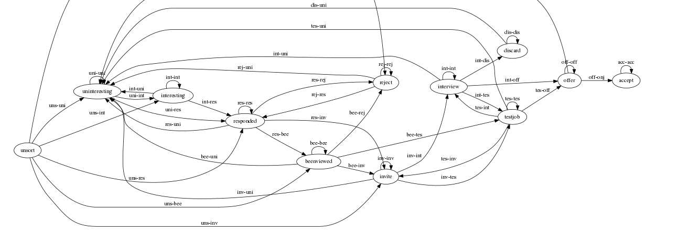

Модуль HeadHunter
Table of Contents
- 1. Цель
- 2. Что это такое?
- 3. Сценарии использования
- 3.1. Составление резюме
- 3.2. Опубликование резюме
- 3.3. Автоматический поиск вакансий, создание правил отбора вакансий и автоматических действий над ними
- 3.4. Поиск и просмотр вакансий, отсев, ранжирование, внесение заметок по вакансиям
- 3.5. Нахождение вакансии в момент телефонного звонка
- 3.6. Рассылка откликов
- 3.7. Достижение договоренности о собеседовании
- 3.8. Выполнение тестовых заданий
- 3.9. Собеседование с работодателем
- 3.10. Выбор лучшего предложения
- 3.11. Вакансия становится неактуальной
- 3.12. Отзывы соискателей о компаниях и вакансиях
- 3.13. Маршрут
- 3.14. Побочные сценарии соискателя
- 3.15. Составление вакансий
- 3.16. Опубликование вакансий
- 3.17. Автоматический поиск резюме, создание правил отбора резюме и автоматических действий над ними
- 3.18. Ручной поиск и просмотр резюме, отсев, ранжирование, внесение заметок по соискателям
- 3.19. Рассылка приглашений
- 3.20. Телефонные интервью
- 3.21. Заполнение анкеты
- 3.22. Собеседование с соискателем
- 3.23. Предложение соискателю тестовых заданий
- 3.24. Проверка тестовых заданий
- 3.25. Анализ статистических отчетов
- 4. Как это работает?
- 4.1. Источник вакансий
- 4.2. Фабрика генераторов вакансий
- 4.3. Определение правила обработки
- 4.4. Процессор правил
- 4.5. Декоратор для process-teaser
- 4.6. Получение и обработка вакансий правилами
- 4.7. Составление правил и работа с ними
- 4.8. Правила отсева тизеров
- 4.9. Макросы для определения правил отсева тизеров
- 4.10. Правила анализа вакансий
- 4.11. Макросы для определения правил анализа вакансий
- 4.12. Построение URL-ов, для скачивания тизеров
- 4.13. Получение страниц
- 4.14. Логин на источник
- 4.15. Разбор тизеров вакансий
- 4.16. Разбор вакансий
- 4.17. Сохранение вакансии и ее структура данных
- 4.18. Состояния вакансий
- 4.19. Печать вакансий
- 4.20. Резюме соискателя
- 4.21. Отправка отклика
- 4.22. Фабрика генераторов отзывов
- 5. Interface
- 6. Отдельные технические вещи
- 7. Хотелки (набор несогласованных идей, чтобы не забыть)
- 8. Тесты
- 9. Точки входа
- 10. Сборка
- 10.1. Фунциональные утилиты
- 10.1.1. Point-free определения:
- 10.1.2. Flip, карринг, композиции:
- 10.1.3. Свёртки и "развёртки":
- 10.1.4. Отображения и фильтрации:
- 10.1.5. Функции для списков на основе карринга и свёрток:
- 10.1.6. Функции для чисел:
- 10.1.7. И для булевых чисел:
- 10.1.8. Многие другие функции представляются свёртками, например:
- 10.1.9. Свёртки для деревьев:
- 10.2. Другие утилиты
- 10.3. Утилиты
- 10.4. Глобальные определения
- 10.5. Сущности и автоматы
- 10.1. Фунциональные утилиты
- 11. TODO TODO
1 Цель
Мы все ищем работу на профильных сайтах время от времени. Иногда на это уходит значительное время, т.к. мы выполняем множество рутинных действий, которых могли бы избежать. Попробуем автоматизировать этот процесс, так чтобы работа, по-возможности искалась сама, без непосредственного участия соискателя.
2 Что это такое?
Это средство автоматизации процесса поиска работы, выполненное в форме экспертной системы. Оно умеет обучаться по ходу взаимодействия со своим пользователем. Обучение производится с помощью внесения пользователем правил обработки входящего потока вакансий.
3 Сценарии использования
Если рассматривать поиск работы как бизнес-процесс, то в этом процессе я выступаю как соискатель, а если с точки зрения data-flow - то обьект манипуляций является вакансия, которая, с моей точки зрения, может находится в нескольких состояниях:
- неотсортированна
- неинтересная
- интерсная
- отправлен отзыв
- отзыв просмотрен
- работодатель отказал
- работодатель пригласил на интервью
- прохождение интервью
- получено предложение
Состояния образуют ориентированный граф, а множество вакансий в состояниях после "отзыв отправлен" - фронт работ, в котором понятно что нужно делать по каждой вакансии. Ну а интерфейс обеспечивает доступ к выборкам вакансий (CRUD) и действиям над ними (BehaviourEngine).
Если по графу понятно какие возможны действия по каждой вакансии, то часть их можно автоматизировать - например, т.н. "преселект", когда мы выкидываем вакансии, которые соискателю заведомо неинтересны (например, я не хочу разрабатывать на .NET или рассматривать вакансии без указания зарплаты). Или вот, к примеру, можно анализировать текст вакансии, и если стек технологий, оплата и месторасположение устраивает - автоматически отправлять отзыв.
Вакансии, как правило, пишутся довольно формальным языком, в них всегда есть раздел "Требования", "Будет плюсом", "Условия" и т.п. поэтому это не так сложно. От пользователя-соискателя в этом случае требуется только узнать о том, что его пригласили на собеседование, ну и пройти его конечно.
Работу работодателя можно автоматизировать похожим образом. С той лишь разницей, что работодатель осуществляет операции над отзывом соискателя, к которому прикреплено резюме и другие личные данные соискателя. Этот отзыв может находится в таких состояниях:
- непросмотрен
- неинтересный
- интересный
- отправлено приглашение
- приглашение просмотрено
- отправлено тестовое задание
- назначено собеседование
- сделано предложение (с такими-то условиями)
- предложение принято (вакансия закрыта)
- предложение не принято
Исходя из всего этого, мы можем написать в первую очередь поддержку сценариев использования для соискателя [#A] , а потом и работодателя [#B]:
3.1 Составление резюме
Пользователь просто размещает свое резюме. На самом деле - несколько резюме, так как наиболее продвинутые пользователи пишут резюме под вакансию, а не рассылают одно и то же резюме всем подряд.
3.2 Опубликование резюме
3.3 Автоматический поиск вакансий, создание правил отбора вакансий и автоматических действий над ними
Внутри вакансий необходимо искать по критериям, которые пользователь может задавать сам, в форме правил, выполняющих действия над вакансией, если она совпадает с правилом
Вакансии полезно упорядочить по зарплате
Мне бы хотелось сразу получать представление, насколько свежая вакансия
Мне было бы интересно, сколько интервью было проведено и запланировано по вакансии - эту информацию можно узнать из анализа активности по ней других пользователей
Мне было бы интересно, как менялась вакансия с момента ее размещения компанией - можно находить и отслеживать похожие вакансии по расстоянию Левенштейна в описании, к примеру. Динамика изменения зарплатного предложения может многое сказать об отношении к вакансии.
3.4 Поиск и просмотр вакансий, отсев, ранжирование, внесение заметок по вакансиям
Когда я читаю вакансию, я бы хотел, чтобы она переходила в статус "просмотрено" (и к ней добавлялась дата просмотра)
Читая вакансию, мне бы хотелось устанавливать ей приоритет и вносить заметки, чтобы отслеживать такие моменты, как например: необходимость позвонить позже, или все, что мне сказал hr по телефону.
Если я отправляю отзыв на вакансию или звоню по телефону - я бы хотел, чтобы эти действия сопровождались временем и изменением статуса, чтобы потом можно было отследить историю взаимодействия с HR.
При этом, мне хотелось бы видеть на дашборде те вакансии, с которыми я договорился о встрече и те, по которым нет движения долгое время, чтобы ничего не забывалось.
Я хочу получать напоминания о моем следующем шаге в отношении тех вакансий, которые мне интересны.
Мне бы хотелось видеть на каком я этапе в тех вакансиях, которые меня интересуют.
3.5 Нахождение вакансии в момент телефонного звонка
После отправки отклика звонит работодатель и приглашает на интервью. В этот момент я хочу найти эту вакансию, глянуть ее и в зависимости от того до чего мы договорились с работодателем выставить ей некоторое состояние или внести заметки, поставить тег, и.т.п.
3.6 Рассылка откликов
3.6.1 Написание сопроводительных писем
Соискатель пишет шаблоны сопроводительных писем, которые будут отправлены вместе с отзывом на вакансию
3.7 Достижение договоренности о собеседовании
3.8 Выполнение тестовых заданий
3.9 Собеседование с работодателем
3.10 Выбор лучшего предложения
3.11 Вакансия становится неактуальной
Вакансия может стать неактуальной если работодатель снимет ее, но работодатели могут забывать это сделать, поэтому можно предусмотреть тайм-аут или даже некоторое кол-во голосов соискателей, которые дозвонились но им сказали, что вакансия уже неактуальна.
3.12 Отзывы соискателей о компаниях и вакансиях
Можно сэкономить кучу времени и денег просто не нанимаясь в те компании, в которых "все плохо". В этом плане соискатели могут помочь друг другу. Возможно и компании тоже будут прислушиваться к такому фидбеку.
3.13 Маршрут
Иногда я хочу спланировать маршрут поездки по собеседованиям. Это сервис с картами, которые можно сделать позже.
3.14 Побочные сценарии соискателя
Вакансии на сайтах размещаются компаниями и привязываются к ним. Мне, как соискателю,
интересно посмотреть какие вакансии размещала ранее конкретная компания, какие она
размещает теперь, как изменялись зарплаты - и тому подобная аналитическая информация.
Я также хочу чтобы система проходила по вакансиям и в зависимости от сочетания условий выполняла какие-то действия
- напоминание мне о собеседованиях, звонках (календарь)
- автоматическое ранжирование вакансий (по перспективам найма, зарплате и.т.п)
Система может анализировать компании с т.з. выставляемых вакансий и формирует профиль компании. По выставляемым вакансиям можно сделать интересные выводы - например когда у компании внезапно появляются вакансии на одного сеньера и нескольких линейных разработчиков - это напоминает открытие нового отдела/проекта.
Система может классифицировать сохраненные вакансии по формальным признакам, таким как:
- новые вакансии
- измененные
- закрытые (о закрытости вакансии можно судить по ряду критериев)
- особенно интересные
- необычные
В случае изменений или появления новых интересующих пользователя вакансий можно пользователю отправляеть уведомление (через систему очередей сообщений и по email).
Исходя из анализа DESCRIPTION можно определить требуемую технологию и требуемую степень владения ею.
Еще можно сделать:
Предоставление рекомендаций и отбор вакансий на основе модифицируемых правил и фактах предметной области, таких как "работодатель - компания по разработке ПО" или "ИТ-поддержка не является приоритетом компании"
Предсказание поведения (путей достижения целей) компании (в процессе найма и вне его) на основе моделей и целей.
Выбор вариантов поведения в ответ на предьявляемые требования (цикл распознавание-действие в продукционной системе). Вплоть до автоматического построния резюме под вакансию из шаблонов.
Построение концептуальных моделей и преобразования в них - выбор стратегии действий и постановка целей.
Выбор способа представления знаний (правила, фреймы, концептуальные графы)
Выбор стратегии поиска
Включение терма из набора технологий в заголовке вакансии - присвоение классификатора (тега)
Правила вывода - сопоставление с профилем
Вычисление различий (дифф) требований вакансии и профильных навыков резюме - подбор или построение оптимального резюме
Интерактивное построение профиля (ответы на вопросы). Необходим видимый прогресс и предварительная классификация предложений
Построение новых правил на основе известных
Когда вакансия переносится в архив - мы должны отслеживать это на стороннем сайте и
реагировать, устанавливая статус archive
Когда мы собираем вакансии, распарсивая их с других сайтов, мы должны отслеживать их состояние на этих сайтах.
3.15 Составление вакансий
3.16 Опубликование вакансий
3.17 Автоматический поиск резюме, создание правил отбора резюме и автоматических действий над ними
3.18 Ручной поиск и просмотр резюме, отсев, ранжирование, внесение заметок по соискателям
3.19 Рассылка приглашений
3.20 Телефонные интервью
3.21 Заполнение анкеты
3.22 Собеседование с соискателем
3.23 Предложение соискателю тестовых заданий
3.24 Проверка тестовых заданий
3.25 Анализ статистических отчетов
4 Как это работает?
4.1 Источник вакансий
Пусть у нас есть источник вакансий, например, hh.ru. На нем можно сформулировать запрос и получить выборку в виде списка тизеров вакансий, каждый из которых ведет на полное описание вакансии.

Figure 1: Это источник вакансий
4.2 Фабрика генераторов вакансий
Пусть у нас есть фабрика генераторов функций назовем его factory, которая принимает
источник вакансий и параметры запроса (например: профессиональную область, специализацию,
город) и возвращает функцию-генератор в замыкании.

Figure 2: Фабрика генераторов вакансий
Эта функция-генератор при каждом своем вызове вернет одну вакансию или ложь если все
вакансии кончились.

Figure 3: Функция-генератор, произведенная фабрикой
Внутри себя эта функция по мере необходимости загружает и разбирает сначала тизеры
вакансий, а потом и сами вакансии, при этом процесс превращения тизера в вакансию
(process-teaser) вынесен из замыкания, т.к. не зависит от замкнутых переменных.
(in-package #:moto) <<make_hh_url>> <<hh_get_page>> <<hh_parse_vacancy_teasers>> <<hh_parse_vacancy>> (defmethod process-teaser (current-teaser) (aif (hh-parse-vacancy (hh-get-page (format nil "http://spb.hh.ru/vacancy/~A" (getf current-teaser :id)))) (merge-plists current-teaser it) nil)) (defmethod factory ((vac-src (eql 'hh)) city prof-area &optional spec) (let ((url (make-hh-url city prof-area spec)) (page 0) (teasers nil)) (alexandria:named-lambda get-vacancy () (labels ((load-next-teasers-page () ;; (dbg "~~ LOAD (page=~A)" page) (setf teasers (hh-parse-vacancy-teasers (hh-get-page (format nil url page)))) (incf page) (when (equal 0 (length teasers)) (dbg "~~ FIN") (return-from get-vacancy 'nil))) (get-teaser () (when (equal 0 (length teasers)) (load-next-teasers-page)) (let ((current-teaser (car teasers))) (setf teasers (cdr teasers)) current-teaser))) (tagbody get-new-teaser (let ((current-teaser (get-teaser))) (let ((current-vacancy (process-teaser current-teaser))) (if (null current-vacancy) (go get-new-teaser) (return-from get-vacancy current-vacancy)))))))))
Для работы этому генератору нужно уметь:
- Собирать URL страницы, где лежат тизеры (краткие описания) вакансий из параметов запроса
(
make-hh-url) - Скачивать HTML-страницы (
hh-get-page) - Разбирать тизеры из html-кода (
hh-parse-vacancy-teasers) - Обрабатывать разобранные тизеры (
hh-parse-vacancy), чтобы получить по ним вакансии.
Но я не буду сейчас на этом останавливаться и опишу потом, в соответствующих разделах.
4.3 Определение правила обработки
Пусть у нас есть возможность создавать именованные правила, которые получают на вход
список, представляющий собой тизер или вакансию, анализируют его, и выполняют какие-то
действия. В качестве примера, мы могли бы создать правило, которое добавляет к вакансии
поле interesting если зарплата и язык разработки нас устраивает.
Правило принимает на вход условие срабатывания и код, который будет выполнен, в случае если условие выполняется на обрабатываемой вакансии.
Примем соглашение, что правило возвращает два значения:
- первое - вакансию (возможно измененную)
- второе - указание процессору правил (например, прекратить обработку)
(in-package #:moto) (defmacro define-rule ((name antecedent) &body consequent) `(list (defun ,(intern (concatenate 'string (symbol-name name) "-ANTECEDENT")) (vacancy) ,antecedent) (defun ,(intern (concatenate 'string (symbol-name name) "-CONSEQUENT")) (vacancy) (let ((result (progn ,@consequent))) (values vacancy result))))) ;; expand ;; (macroexpand-1 '(define-rule (hi-salary-java (and (> (getf vacancy :salary) 70000) ;; (not (contains "Java" (getf vacancy :name))))) ;; (setf (getf vacancy :interesting) t) ;; :stop)) ;; test ;; (define-rule (hi-salary-java (and (> (getf vacancy :salary) 70000) ;; (not (contains "Java" (getf vacancy :name))))) ;; (setf (getf vacancy :interesting) t) ;; :stop) ;; (let ((vacancy '(:name "Python" :salary 80000))) ;; (multiple-value-bind (vacancy-result rule-result) ;; (if (hi-salary-java-antecedent vacancy) ;; (hi-salary-java-consequent vacancy)) ;; (print (format nil "vacancy: ~A ||| rule-result: ~A" (bprint vacancy-result) (bprint rule-result))))) ;; ->"vacancy: (:INTERESTING T :NAME \"Python\" :SALARY 80000) ||| rule-result: :STOP"
4.4 Процессор правил
Теперь мы можем создать процессор правил process, который применяет к вакансии правила
поочередно. По сути, это машина Э.Поста, а все вместе представляет собой продукционную
систему с прямой цепочкой вывода. Подробнее про продукционные системы тут и тут.

Figure 4: Продукционная система
Процессор правил обрабатывает следущие особые случаи:
- Если какое-то из правил возвращает во втором параметре
:stop- обработка прекращается и возвращается текущий обработанный результат - Если какое-то из правил возвращает во втором параметре
:renew- то обработка текущего входного результата начинается с самого первого правила.
По окончании обработки возвращается результирующая вакансия, которая может быть модифицирована правилами

(in-package #:moto) (defun process (vacancy rules) (let ((vacancy vacancy)) (tagbody renew (loop :for rule :in rules :do (let ((antecedent (concatenate 'string (symbol-name rule) "-ANTECEDENT")) (consequent (concatenate 'string (symbol-name rule) "-CONSEQUENT"))) (if (funcall (intern antecedent) vacancy) (multiple-value-bind (vacancy-result rule-result) (funcall (intern consequent) vacancy) (setf vacancy vacancy-result) (when (equal rule-result :stop) (return-from process vacancy)) (when (equal rule-result :renew) (go renew))))))) vacancy))
4.5 Декоратор для process-teaser
Поскольку и вакансии и их тизеры представлены у нас одинаково, мы можем применять правила и к тем и к другим. Это позволит отфильтровать некоторые вакансии только анализируя их тизеры и не загружать лишнего.
Для того, чтобы сделать это удобным образом, обернем (:around method) process-teaser
так, чтобы исключить из дальнейшей обрабоки те тизеры, которые нам не нравятся. Например
те, у которых нет указания зарплаты или она слишком низка. После того, как тизер
превратиться в вакансию мы применим к ней другой список правил, которые реализуют все
остальную логику.

(in-package #:moto) <<rules>> (defmethod process-teaser :around (current-teaser) (aif (process current-teaser (rules-for-teaser)) (process (call-next-method it) (rules-for-vacancy)) nil))
4.6 Получение и обработка вакансий правилами
Теперь мы можем получить генератор, и, вызывая его, забирать вакансии, пока они не закончатся. Все вакансии будут корректно обработаны правилами - сначала на этапе получения тизеров, а потом на этапе получения вакансий.
(in-package #:moto) <<define_rule>> <<process>> <<process_teaser_around>> <<factory>> <<save_vacancy>> <<send_respond>> (defun run () (make-event :name "run" :tag "parser-run" :msg (format nil "Сбор вакансий") :author-id 0 :ts-create (get-universal-time)) (let ((gen (factory 'hh "spb" "Информационные технологии, интернет, телеком" "Программирование, Разработка"))) (loop :for i :from 1 :to 100 :do ;; (dbg "~A" i) (let ((vacancy (funcall gen))) (when (null vacancy) (return)))))) ;; (run)
4.7 Составление правил и работа с ними
Теперь можно удобным и компактным способом добавить все необходимые правила и обеспечить методы их обработки
(in-package #:moto) <<rules_for_vacancy>> <<rules_for_teasers>> (defun get-all-rules () (let ((result (make-hash-table :test #'equal))) (loop :for var :being :the present-symbols :in (find-package "MOTO") :when (or (and (search "CONSEQUENT" (symbol-name var)) (fboundp var)) (and (search "ANTECEDENT" (symbol-name var)) (fboundp var))) :collect (let ((key (ppcre:regex-replace "-ANTECEDENT" (symbol-name var) ""))) (setf key (ppcre:regex-replace "-CONSEQUENT" key "")) (setf (gethash key result) ""))) (mapcar #'intern (sort (alexandria:hash-table-keys result) #'(lambda (a b) (string< a b)))))) (defun clear-all-rules () (loop :for var :being :the present-symbols :in (find-package "MOTO") :when (or (and (search "CONSEQUENT" (symbol-name var)) (fboundp var)) (and (search "ANTECEDENT" (symbol-name var)) (fboundp var))) :collect (fmakunbound var))) (defun rules-for-teaser () (remove-if-not #'(lambda (x) (search "DROP-TEASER-IF" (symbol-name x))) (get-all-rules))) (defun rules-for-vacancy () (remove-if #'(lambda (x) (search "DROP-TEASER-IF" (symbol-name x))) (get-all-rules)))
4.8 Правила отсева тизеров
Какие же правила и действия можно составить для того чтобы отсеять неинтересные тизеры вакансий? В основном те, которые не устраивают по зарплате и те, у которых в названиях упомянуты неинтересные технологии. К примеру, я не хочу даже смотреть на вакансии у которых не указана зарплата или она ниже минимально премлимой
(in-package #:moto) <<sugar_for_teaser_rules>> (define-drop-teaser-rule (salary-1-no (null (getf vacancy :salary))) (dbg " - no salary")) (define-drop-teaser-rule (salary-2-low (or (and (equal (getf vacancy :currency) "RUR") (< (getf vacancy :salary-max) 90000)) (and (equal (getf vacancy :currency) "USD") (< (getf vacancy :salary-max) (floor 90000 67))) (and (equal (getf vacancy :currency) "USD") (< (getf vacancy :salary-max) (floor 90000 77))) )) (dbg " - low salary")) (define-drop-all-teaser-when-name-contains-rule "iOS" "Python" "Django" "IOS" "1C" "1С" "C++" "С++" "Ruby" "Ruby on Rails" "Frontend" "Front End" "Front-end" "Go" "Q/A" "QA" "C#" ".NET" ".Net" "Unity3D" "Flash" "Java" "Android" "ASP" "Objective-C" "Go" "Delphi" "Sharepoint" "Flash" "PL/SQL" "Oracle" "designer")
4.9 Макросы для определения правил отсева тизеров
Для начала определим макрос, который создает правила отсева тизеров - эти правила
отличаются тем, что всегда в первом параметре возвращают nil, а во втором - :stop
(in-package #:moto) (defmacro define-drop-teaser-rule ((name antecedent) &body consequent) `(define-rule (,(intern (concatenate 'string "DROP-TEASER-IF-"(symbol-name name))) ,antecedent) (dbg "drop teaser: ~A-~A (~A) ~A" (getf vacancy :salary-min) (getf vacancy :salary-max) (getf vacancy :currency) (getf vacancy :name)) ;; (dbg "~A" vacancy) ,@consequent (setf vacancy nil) :stop)) ;; expand ;; (print ;; (macroexpand-1 ;; '(define-drop-teaser-rule (hi-salary-java (and (> (getf vacancy :salary) 70000) ;; (not (contains "Java" (getf vacancy :name))))) ;; (print (getf vacancy :name)) ;; (print (getf vacancy :salary))))) ;; (DEFINE-RULE (DROP-TEASER-IF-HI-SALARY-JAVA ;; (AND (> (GETF VACANCY :SALARY) 70000) ;; (NOT (CONTAINS "Java" (GETF VACANCY :NAME))))) ;; (PRINT (GETF VACANCY :NAME)) ;; (PRINT (GETF VACANCY :SALARY)) ;; (SETF VACANCY NIL) ;; :STOP)
Теперь определим расширение предыдущего макроса, которое создает правило, отсеивающее
тизер, в случае, если в поле :name есть вхождение переданной строки
(in-package #:moto) (defmacro define-drop-teaser-by-name-rule (str &body consequent) `(define-drop-teaser-rule (,(intern (concatenate 'string "NAME-CONTAINS-" (string-upcase (ppcre:regex-replace-all "\\s+" str "-")))) (contains (getf vacancy :name) ,str)) (dbg " - name contains ~A" ,str) ,@consequent)) ;; expand ;; (print ;; (macroexpand-1 ;; '(define-drop-teaser-by-name-rule "Android"))) ;; (DEFINE-DROP-TEASER-RULE (IF-NAME-CONTAINS-ANDROID ;; (CONTAINS (GETF VACANCY :NAME) "Android")) ;; (DBG "drop:") ;; (DBG " name contains ~A" "Android")) ;; test ;; (define-drop-teaser-by-name-rule "Android") ;; ==> (DROP-TEASER-IF-IF-NAME-CONTAINS-ANDROID-ANTECEDENT ;; DROP-TEASER-IF-IF-NAME-CONTAINS-ANDROID-CONSEQUENT)
Теперь в соответствии с принципом DRY определем макрос, который создаст список правил,
отсеивающих тизеры по вхождению первой строки в поле :name
(in-package #:moto) (defmacro define-drop-all-teaser-when-name-contains-rule (&rest names) `(list ,@(loop :for name :in names :collect `(define-drop-teaser-by-name-rule ,name)))) ;; expand ;; (macroexpand-1 '(define-drop-all-teaser-when-name-contains-rule "IOS" "1С" "C++")) ;; (LIST (DEFINE-DROP-TEASER-BY-NAME-RULE "IOS") ;; (DEFINE-DROP-TEASER-BY-NAME-RULE "1С") ;; (DEFINE-DROP-TEASER-BY-NAME-RULE "C++")) ;; test ;; (define-drop-all-teaser-when-name-contains-rule "IOS" "1С" "C++")) ;; => ;; ((DROP-TEASER-IF-IF-NAME-CONTAINS-IOS-ANTECEDENT ;; DROP-TEASER-IF-IF-NAME-CONTAINS-IOS-CONSEQUENT) ;; (DROP-TEASER-IF-IF-NAME-CONTAINS-1С-ANTECEDENT ;; DROP-TEASER-IF-IF-NAME-CONTAINS-1С-CONSEQUENT) ;; (DROP-TEASER-IF-IF-NAME-CONTAINS-C++-ANTECEDENT ;; DROP-TEASER-IF-IF-NAME-CONTAINS-C++-CONSEQUENT))
4.10 Правила анализа вакансий
- Я не хочу смотреть на вакансии, в компаниях где я уже работал.
- Если это уже существующая в базе вакансия и ничего не изменилось - игнорируем и останавливаем ее обработку
- Я хочу присвоить вакансии определенный ранг, в зависимости от з\п
- Я хочу увеличивать этот ранг за упоминание в тексте описания вакансии моих любимых слов: Lisp, Erlang, Closure, Prolog, Haskell, Smalltalk
- Я хочу особо отметить вакансии, у которых ранг выше [порогового ранга], чтобы [отправить отклик]
- Я хочу занести вакансию в базу.
- Я хочу вывести вакансию в консоль.
(in-package #:moto) <<sugar_for_vacancy_rules>> <<show_vacancy>> (define-drop-vacancy-rule (already-worked (contains (getf vacancy :emp-name) "Webdom")) (dbg " - already worked")) (define-drop-vacancy-rule (already-worked (contains (getf vacancy :emp-name) "Пулково-Сервис")) (dbg " - already worked")) (define-drop-vacancy-rule (already-worked (contains (getf vacancy :emp-name) "FBS")) (dbg " - already worked")) (define-drop-vacancy-rule (already-exists-in-db (not (null (find-vacancy :src-id (getf vacancy :id))))) (let ((exists (car (find-vacancy :src-id (getf vacancy :id))))) (dbg " - already exists"))) (define-rule (set-rank t) (setf (getf vacancy :rank) (getf vacancy :salary))) (define-rule (set-rank-up-by-lisp (contains (format nil "~A" (bprint (getf vacancy :descr))) "Lisp")) (dbg "up rank by Lisp") (setf (getf vacancy :rank) (+ (getf vacancy :rank) 30000))) (define-rule (set-rank-up-by-erlang (contains (format nil "~A" (bprint (getf vacancy :descr))) "Erlang")) (dbg "up rank by Erlang") (setf (getf vacancy :rank) (+ (getf vacancy :rank) 15000))) (define-rule (set-rank-up-by-haskell (contains (format nil "~A" (bprint (getf vacancy :descr))) "Haskell")) (dbg "up rank by Haskell") (setf (getf vacancy :rank) (+ (getf vacancy :rank) 10000))) (define-rule (z-print t) (show-vacancy vacancy)) (define-rule (z-save t) (save-vacancy vacancy) :stop)
4.11 Макросы для определения правил анализа вакансий
Для начала определим макрос, который создает правила отсева вакансий - эти правила
отличаются тем, что всегда в первом параметре возвращают nil, а во втором - :stop
(in-package #:moto) (defmacro define-drop-vacancy-rule ((name antecedent) &body consequent) `(define-rule (,(intern (concatenate 'string "DROP-VACANCY-IF-"(symbol-name name))) ,antecedent) (dbg "drop vacancy: ~A : ~A" (getf vacancy :name) (getf vacancy :emp-name)) ,@consequent (setf vacancy nil) :stop)) ;; expand ;; (print ;; (macroexpand-1 ;; '(define-drop-vacancy-rule (hi-salary-java (and (> (getf vacancy :salary) 70000) ;; (not (contains "Java" (getf vacancy :name))))) ;; (print (getf vacancy :name)) ;; (print (getf vacancy :salary))))) ;; (DEFINE-RULE (DROP-VACANCY-IF-HI-SALARY-JAVA ;; (AND (> (GETF VACANCY :SALARY) 70000) ;; (NOT (CONTAINS "Java" (GETF VACANCY :NAME))))) ;; (PRINT (GETF VACANCY :NAME)) ;; (PRINT (GETF VACANCY :SALARY)) ;; (SETF VACANCY NIL) ;; :STOP)
4.12 Построение URL-ов, для скачивания тизеров
Тизеры вакансий размещаются постранично, по 20 штук на странице, и мы можем собрать все страницы, если будем получать страницу за страницей, пока не получим страницу, на которой вакансий нет.
В качестве GET-параметров запросы указываются специализации и город. Значения cluster
и area не меняются. Поэтому, единственная сложность построения URL - это правильно
сформировать специализации.
(in-package #:moto) <<make_specialization_hh_url_string>> (defun make-hh-url (city prof-area &optional specs) "http://spb.hh.ru/search/vacancy?text=&specialization=1.221&area=2&items_on_page=100&no_magic=true&page=~A") ;; test (make-hh-url "spb" "Информационные технологии, интернет, телеком" "Программирование, Разработка")
4.12.1 Построение специализаций
Специализации задаются в формате "1.221", где цифра слева от точки представляет профессиональное направление, а справа - собственно специализацию. В интерфейсе допустимо выбрать одно направление и несколько специализаций в нем, при этом для каждой специализации формируется параметр GET-запроса. Допустимо выбрать только направление, без специализаций.
По этой причине мы должны иметь дерево специализаций и транслятор названий специализаций в их номера.
(in-package #:moto) <<prof_areas>> (defun make-specialization-hh-url-string (prof-area &optional specs) (let ((specialization (assoc prof-area *prof-areas* :test #'equal))) (when (null specialization) (err 'specialization-not-found)) (when (stringp specs) (setf specs (list specs))) (if (null specs) (concatenate 'string "&specialization=" (cadr specialization)) (format nil "~{&~A~}" (loop :for spec :in specs :collect (let ((spec (cdr (assoc spec (caddr specialization) :test #'equal)))) (when (null spec) (err 'spec-not-found)) (concatenate 'string "specialization=" (cadr specialization) "." spec))))))) ;; test ;; (make-specialization-hh-url-string "Информационные технологии, интернет, телеком") ;; (make-specialization-hh-url-string "Информационные технологии, интернет, телеком" '("Программирование, Разработка")) ;; (make-specialization-hh-url-string "Информационные технологии, интернет, телеком" "Программирование, Разработка") ;; (make-specialization-hh-url-string "Информационные технологии, интернет, телеком" ;; '("Программирование, Разработка" ;; "Web инженер" ;; "Web мастер" ;; "Стартапы" ;; "Управление проектами" ;; "Электронная коммерция"))
Дерево специализаций будем хранить в глобальном alist-е, т.к. оно никогда не меняется. Я не стал заполнять его целиком, ограничившись только профессиональной областью "ИТ". По необходимости заполню остальное.
(in-package #:moto) (defparameter *prof-areas* '(("Все профессиональные области" . ("")) ("Информационные технологии, интернет, телеком" . ("1" (("CRM системы" . "536") ("CTO, CIO, Директор по IT" . "3") ("Web инженер" . "9") ("Web мастер" . "10") ("Администратор баз данных" . "420") ("Аналитик" . "25") ("Арт-директор" . "30") ("Банковское ПО" . "395") ("Игровое ПО" . "475") ("Инженер" . "82") ("Интернет" . "89") ("Компьютерная безопасность" . "110") ("Консалтинг, Аутсорсинг" . "113") ("Контент" . "116") ("Маркетинг" . "137") ("Мультимедиа" . "161") ("Начальный уровень, Мало опыта" . "172") ("Оптимизация сайта (SEO)" . "400") ("Передача данных и доступ в интернет" . "203") ("Поддержка, Helpdesk" . "211") ("Программирование, Разработка" . "221") ("Продажи" . "225") ("Продюсер" . "232") ("Развитие бизнеса" . "246") ("Сетевые технологии" . "270") ("Системная интеграция" . "272") ("Системный администратор" . "273") ("Системы автоматизированного проектирования" . "274") ("Системы управления предприятием (ERP)" . "50") ("Сотовые, Беспроводные технологии" . "277") ("Стартапы" . "474") ("Телекоммуникации" . "295") ("Тестирование" . "117") ("Технический писатель" . "296") ("Управление проектами" . "327") ("Электронная коммерция" . "359")))) ("Бухгалтерия, управленческий учет, финансы предприятия" . ("2")) ("Маркетинг, реклама, PR" . ("3")) ("Административный персонал" . ("4")) ("Банки, инвестиции, лизинг" . ("5")) ("Управление персоналом, тренинги" . ("6")) ("Автомобильный бизнес" . ("7")) ("Безопасность" . ("8")) ("Высший менеджмент" . ("9")) ("Добыча сырья" . ("10")) ("Искусство, развлечения, масс-медиа" . ("11")) ("Консультирование" . ("12")) ("Медицина, фармацевтика" . ("13")) ("Наука, образование" . ("14")) ("Государственная служба, некоммерческие организации" . ("16")) ("Продажи" . ("17")) ("Производство" . ("18")) ("Страхование" . ("19")) ("Строительство, недвижимость" . ("20")) ("Транспорт, логистика" . ("21")) ("Туризм, гостиницы, рестораны" . ("22")) ("Юристы" . ("23")) ("Спортивные клубы, фитнес, салоны красоты" . ("24")) ("Инсталляция и сервис" . ("25")) ("Закупки" . ("26")) ("Начало карьеры, студенты" . ("15")) ("Домашний персонал" . ("27")) ("Рабочий персонал" . ("29"))))
4.13 Получение страниц
Так как мы хотим получать информацию, которая находится за авторизацией, нам нужно
обеспечить прозрачность авторизации, если ее в данный момент нет. hh_login решает эту
проблему.
Вот так мы можем получать страницы, к примеру те, на который находятся тизеры:
- Получаем страницу
- Проверяем, залогинены ли мы
- Если залогинены - отдаем страницу
- Если не залогинены - логинимся и получаем страницу снова.
- Если во время логина произошла ошибка - сигнализируем условие.
Есть также одна особенность (типа баг) в результате которой drakma неправильно
воспринимает сформированные в get-запросе параметры и говорит что URI malformed. Мы
обходим это с помощью глобального флага *need-start* что является временным решением.
(in-package #:moto) <<hh_login>> (defun hh-get-page (url) "Получение страницы" (when *need-start* (setf *need-start* nil) (set-start)) (labels ((get-html-data (uri) (flexi-streams:octets-to-string (drakma:http-request url :user-agent *user-agent* :additional-headers (append *additional-headers* `(("Cookie" . ,(make-cookies-string *cookies*)) ("Referer" . ,*referer*))) :force-binary t :cookie-jar *cookie-jar*) :external-format :utf-8))) (let ((html (get-html-data url))) (when (is-logged html) (setf *referer* url) (return-from hh-get-page html)) (setf *cookies* (recovery-login)) (hh-get-page url))))
4.14 Логин на источник
Прежде чем мы получим возможность забирать авторизованную информацию с нашего источника, нам нужно иметь способ залогиниться на него. В дополнение к этому мы должны отслеживать момент потери авторизованной сесии и в каждый конкретный момент определять, залогинены ли мы. Обычно это можно определить по наличию формы для логина на любой загружаемой странице. Мы хотим в случае обрыва сессии перелогиниваться прозрачно для всего остального кода, поэтому процедура логина должна вызвываться по необходимости из процедуры загрузки любой страницы. Также важно обрабатывать ошибки, которые могут произойти при логине, например, если неверен пароль, но это пока не делается.
(in-package #:moto) ;; (setf drakma:*header-stream* *standard-output*) (defparameter *user-agent* "Mozilla/5.0 (X11; Ubuntu; Linux x86_64; rv:35.0) Gecko/20100101 Firefox/35.0") (defparameter *additional-headers* `(("Accept" . "text/html,application/xhtml+xml,application/xml;q=0.9,*/*;q=0.8") ("Accept-Language" . "ru-RU,ru;q=0.8,en-US;q=0.5,en;q=0.3") ("Accept-Charset" . "utf-8"))) (defparameter *cookies* nil) (defparameter *cookie-jar* (make-instance 'drakma:cookie-jar)) (defparameter *referer* "") (defparameter *login-post* `(("username" . "avenger-f%40yandex.ru") ("password" . "jGwPswRAfU6sKEhVXX") ("backUrl" . "http%3A%2F%2Fspb.hh.ru%2F") ("remember" . "yes") ("action" . "%D0%92%D0%BE%D0%B9%D1%82%D0%B8"))) (defun is-logged (html) "Проверям наличие в html блока 'Войти'" (not (contains html "data-qa=\"mainmenu_loginForm\">Войти</div>"))) (defun get-cookies-alist (cookie-jar) (loop :for cookie :in (drakma:cookie-jar-cookies cookie-jar) :append (list (cons (drakma:cookie-name cookie) (drakma:cookie-value cookie))))) (defun make-post-string (alist-param) (format nil "~{~A~^&~}" (mapcar #'(lambda (x) (format nil "~A=~A" (car x) (cdr x))) alist-param))) (defun make-cookies-string (alist-param) (format nil "~{~A~^; ~}" (mapcar #'(lambda (x) (format nil "~A=~A" (car x) (cdr x))) alist-param))) ;; (defun get-password-forms (tree) ;; "Получение форм содержащих input password" ;; (let* ((forms (let ((forms)) ;; (mtm (`("form" ,attrs ,@rest) (push `("form" ,attrs ,@rest) forms)) tree) ;; (labels ((is-contains-password (x) ;; (mtm (`("type" "password") (return-from is-contains-password t)) x) ;; (return-from is-contains-password nil))) ;; (remove-if-not #'is-contains-password forms))))) ;; (loop :for form :in forms :collect ;; (let ((rs (list (cadr form)))) ;; (mtm (`("input" ,attrs) (setf rs (append rs (list (let ((tmp (loop :for (key val) :in attrs :append (list (intern (string-upcase key) :keyword) val)))) ;; (list (getf tmp :name) (getf tmp :type) (getf tmp :value))))))) form) ;; rs)))) (defun remote-login (xsrf cookies referer cookie-jar) (flexi-streams:octets-to-string (drakma:http-request "https://spb.hh.ru/account/login" :user-agent *user-agent* :method :post :content (make-post-string (append *login-post* `(("_xsrf" . ,xsrf)))) :additional-headers (append *additional-headers* `(("Cookie" . ,(make-cookies-string cookies)) ("Referer" . ,*referer*))) :cookie-jar cookie-jar :force-binary t) :external-format :utf-8)) (defun recovery-login () (let* ((start-uri "http://spb.hh.ru/") (cookie-jar (make-instance 'drakma:cookie-jar)) (additional-headers *additional-headers*) (tree (html5-parser:node-to-xmls (html5-parser:parse-html5-fragment (flexi-streams:octets-to-string (drakma:http-request start-uri :user-agent *user-agent* :additional-headers additional-headers :force-binary t :cookie-jar cookie-jar) :external-format :utf-8)))) (cookies (get-cookies-alist cookie-jar)) (xsrf (cdr (assoc "_xsrf" cookies :test #'equal))) (html (remote-login xsrf cookies start-uri cookie-jar))) (get-cookies-alist cookie-jar))) (defparameter *need-start* t) (defun set-start () (html5-parser:node-to-xmls (html5-parser:parse-html5-fragment (hh-get-page "http://spb.hh.ru"))))
4.15 Разбор тизеров вакансий
Чтобы получить вакансии со страниц поисковой выдачи - воспользуемся парсером, который переведет полученный html в более удобное лисп-дерево. Используя сопоставление с образцом мы раз за разом преобразуем его до тех пор, пока там не остануться только интересующие нас данные:
- название вакансии
- идентификатор (ссылку)
- дата размещения
- название работодателя
- идентификатор работодателя
Если в вакансии указана зарплата, мы также получаем
- Валюту зарплаты (3х-буквенный идентификатор)
- Сумму
- Текстовое выражение, содержащее "от" или "от и до"
Иногда HeadHunter синдицирует вакансии с других платформ, к примеру с CAREER.RU, тогда в вакансии может отсутствовать работодатель.
(in-package #:moto) <<maptree_transform>> <<parse_salary>> (defparameter *last-parse-data* nil) (defun hh-parse-vacancy-teasers (html) "Получение списка вакансий из html" (setf *last-parse-data* html) (mapcar #'parse-salary (mtm (`("div" (("class" "search-result") ("data-qa" "vacancy-serp__results")) ,@rest) rest) (mtm (`("div" (("data-qa" ,_) ("class" ,(or "search-result-item search-result-item_premium search-result-item_premium" "search-result-item search-result-item_standard " "search-result-item search-result-item_standard_plus "))) ,@rest) (let ((in (remove-if #'(lambda (x) (or (equal x 'z) (equal x "noindex") (equal x "/noindex"))) rest))) (if (not (equal 1 (length in))) (progn (print in) (err "parsing failed, data printed")) (car in)))) (mtm (`("a" (("class" _) ("href" _) ("data-qa" "vacancy-serp__vacancy-interview-insider")) "Посмотреть интервью о жизни в компании") 'Z) (mtm (`("a" (("href" ,_) ("target" "_blank") ("class" "search-result-item__label search-result-item__label_invited") ("data-qa" "vacancy-serp__vacancy_invited")) "Вы приглашены!") 'Z) (mtm (`("a" (("href" ,_) ("target" "_blank") ("class" "search-result-item__label search-result-item__label_discard") ("data-qa" "vacancy-serp__vacancy_rejected")) "Вам отказали") 'Z) (mtm (`("a" (("href" ,_) ("target" "_blank") ("class" "search-result-item__label search-result-item__label_discard") ("data-qa" "vacancy-serp__vacancy_rejected")) "Вам отказали") 'Z) (mtm (`("a" (("title" "Премия HRBrand") ("href" ,_) ("rel" "nofollow") ("class" ,_) ("data-qa" ,_)) " ") 'Z) (mtm (`("div" (("class" "search-result-item__image")) ,_) 'Z) (mtm (`("script" (("data-name" "HH/VacancyResponseTrigger") ("data-params" ""))) 'Z) (mtm (`("a" (("href" ,_) ("target" "_blank") ("class" ,_) ("data-qa" "vacancy-serp__vacancy_responded")) "Вы откликнулись") 'Z) (mtm (`("div" (("class" "search-result-item__star")) ,@_) 'Z) (mtm (`("div" (("class" "search-result-item__description")) ,@rest) (loop :for item :in rest :when (consp item) :append item)) (mtm (`("div" (("class" "search-result-item__head")) ("a" (("class" ,(or "search-result-item__name search-result-item__name_standard" "search-result-item__name search-result-item__name_standard_plus" "search-result-item__name search-result-item__name_premium")) ("data-qa" "vacancy-serp__vacancy-title") ("href" ,id) ("target" "_blank")) ,name)) (list :id (parse-integer (car (last (split-sequence:split-sequence #\/ id)))) :name name)) (mtm (`("a" (("class" "interview-insider__link m-interview-insider__link-searchresult") ("href" ,href) ("data-qa" "vacancy-serp__vacancy-interview-insider")) "Посмотреть интервью о жизни в компании") (list :interview href)) (mtm (`("div" (("class" "b-vacancy-list-salary") ("data-qa" "vacancy-serp__vacancy-compensation")) ("meta" (("itemprop" "salaryCurrency") ("content" ,currency))) ("meta" (("itemprop" "baseSalary") ("content" ,salary))) ,salary-text) (list :currency currency :salary (parse-integer salary) :salary-text salary-text)) (mtm (`("div" (("class" "search-result-item__company")) ,emp-name) (list :emp-name emp-name)) (mtm (`("div" (("class" "search-result-item__company")) ("a" (("href" ,emp-id) ("class" "search-result-item__company-link") ("data-qa" "vacancy-serp__vacancy-employer")) ,emp-name)) (list :emp-id (parse-integer (car (last (split-sequence:split-sequence #\/ emp-id))) :junk-allowed t) :emp-name emp-name)) (mtm (`("div" (("class" "search-result-item__info")) ,@rest) (loop :for item :in rest :when (consp item) :append item)) (mtm (`("span" (("class" "searchresult__address") ("data-qa" "vacancy-serp__vacancy-address")) ,city ,@rest) (let ((metro (loop :for item in rest :do (when (and (consp item) (equal :metro (car item))) (return (cadr item)))))) (list :city city :metro metro))) (mtm (`("span" (("class" "metro-station")) ("span" (("class" "metro-point") ("style" ,_))) ,metro) (list :metro metro)) (mtm (`("span" (("class" "b-vacancy-list-date") ("data-qa" "vacancy-serp__vacancy-date")) ,date) (list :date date)) (mtm (`("span" (("class" "vacancy-list-platform") ("data-qa" "vacancy-serp__vacancy_career")) " • " ("span" (("class" "vacancy-list-platform__name")) "CAREER.RU")) (list :platform 'career.ru)) (block subtree-extract (mtm (`("div" (("class" "search-result") ("data-qa" "vacancy-serp__results")) ,@rest) (return-from subtree-extract rest)) (html5-parser:node-to-xmls (html5-parser:parse-html5-fragment html)))))))))))))))))))))))))))) ;; (hh-parse-vacancy-teasers ;; (hh-get-page "http://spb.hh.ru/search/vacancy?text=&specialization=1&area=2&salary=¤cy_code=RUR&only_with_salary=true&experience=doesNotMatter&order_by=salary_desc&search_period=30&items_on_page=100&no_magic=true"))
4.15.1 Трансформация дерева
(in-package #:moto) ;; Это аналог maptree-if, но здесь одна функция и ищет и трансформирует узел дерева (defun maptree (predicate-transformer tree) (multiple-value-bind (t-tree control) (aif (funcall predicate-transformer tree) it (values tree #'mapcar)) (if (and (consp t-tree) control) (funcall control #'(lambda (x) (maptree predicate-transformer x)) t-tree) t-tree))) ;; maptree-transformer - синтаксический сахар для maptree (defmacro mtm (transformer tree) (let ((lambda-param (gensym))) `(maptree #'(lambda (,lambda-param) (values (match ,lambda-param ,transformer) #'mapcar)) ,tree)))
4.15.2 Определение минимальной и максимальной зарплаты
(in-package #:moto) (defun parse-salary (vacancy) (let ((currency (getf vacancy :CURRENCY)) (salary-text (ppcre:regex-replace-all " " (getf vacancy :salary-text) "")) (salary-min nil) (salary-max nil)) (cond ((equal currency "RUR") (setf salary-text (ppcre:regex-replace-all " руб." salary-text ""))) ((equal currency "USD") (setf salary-text (ppcre:regex-replace-all " USD" salary-text ""))) ((equal currency "EUR") (setf salary-text (ppcre:regex-replace-all " EUR" salary-text ""))) ((equal currency nil) 'nil) (t (progn (print (getf vacancy :currency)) (err 'unk-currency)))) (cond ((search "от " salary-text) (setf salary-min (parse-integer (ppcre:regex-replace-all "от " salary-text "")))) ((search "до " salary-text) (setf salary-max (parse-integer (ppcre:regex-replace-all "до " salary-text "")))) ((search "–" salary-text) (let ((splt (ppcre:split "–" salary-text))) (setf salary-min (parse-integer (car splt))) (setf salary-max (parse-integer (cadr splt))))) ((search "-" salary-text) (let ((splt (ppcre:split "-" salary-text))) (setf salary-min (parse-integer (car splt))) (setf salary-max (parse-integer (cadr splt)))))) (when (null salary-min) (setf salary-min salary-max)) (when (null salary-max) (setf salary-max salary-min)) (setf (getf vacancy :salary-min) salary-min) (setf (getf vacancy :salary-max) salary-max) vacancy)) ;; (hh-parse-vacancy-teasers ;; (hh-get-page "http://spb.hh.ru/search/vacancy?text=&specialization=1&area=2&salary=¤cy_code=RUR&only_with_salary=true&experience=doesNotMatter&order_by=salary_desc&search_period=30&items_on_page=100&no_magic=true"))
4.16 Разбор вакансий
Теперь, можно написать функцию, которая трансформирует описание, очищая его от всего лишнего:
(in-package #:moto) (defun transform-description (tree-descr) (labels ((rem-space (tree) (cond ((consp tree) (cons (rem-space (car tree)) (rem-space (remove-if #'(lambda (x) (equal x " ")) (cdr tree))))) (t tree)))) (append `((:p)) (mtm (`("p" nil ,@in) `((:p) ,@in)) (mtm (`("ul" nil ,@in) `((:ul) ,@in)) (mtm (`("li" nil ,@in) `((:li) ,@in)) (mtm (`("em" nil ,@in) `((:b) ,@in)) (mtm (`("strong" nil ,@in) `((:b) ,@in)) (mtm (`("br") `((:br))) (rem-space tree-descr))))))))))
И, наконец, применим все что мы подготовили, чтобы разобрать вакансию:
(in-package #:moto) <<transform_description>> (defun hh-parse-vacancy (html) (let* ((tree (html5-parser:node-to-xmls (html5-parser:parse-html5-fragment html)))) (append (block header-extract (mtm (`("div" (("class" "b-vacancy-custom g-round")) ("meta" (("itemprop" "title") ("content" ,_))) ("h1" (("class" "title b-vacancy-title")) ,name ,@archive) ,@rest) (return-from header-extract (append (list :name name :archive (if archive t nil)) (block emp-block (mtm (`("div" (("class" "companyname")) ("a" (("itemprop" "hiringOrganization") ("href" ,emp-lnk)) ,emp-name)) (return-from emp-block (list :emp-id (parse-integer (car (last (split-sequence:split-sequence #\/ emp-lnk))) :junk-allowed t) :emp-name emp-name))) rest))))) tree)) (let ((salary-result (block salary-extract (mtm (`("div" (("class" "l-paddings")) ("meta" (("itemprop" "salaryCurrency") ("content" ,currency))) ("meta" (("itemprop" "baseSalary") ("content" ,base-salary))) ,salary-text) (return-from salary-extract (list :currency currency :base-salary (parse-integer base-salary) :salary-text salary-text))) tree)))) (if (equal 6 (length salary-result)) salary-result (list :currency nil :base-salary nil :salary-text nil))) (let ((city-result (block city-extract (mtm (`("td" (("class" "l-content-colum-2 b-v-info-content")) ("div" (("class" "l-paddings")) ,city)) (return-from city-extract (list :city city))) tree)))) (if (equal 2 (length city-result)) city-result (list :city nil))) (let ((exp-result (block exp-extract (mtm (`("td" (("class" "l-content-colum-3 b-v-info-content")) ("div" (("class" "l-paddings") ("itemprop" "experienceRequirements")) ,exp)) (return-from exp-extract (list :exp exp))) tree)))) (if (equal 2 (length exp-result)) exp-result (list :exp nil))) (let ((respond-result (block respond-extract (mtm (`("div" (("class" "g-attention m-attention_good b-vacancy-message")) "Вы уже откликались на эту вакансию. " ("a" (("href" ,resp)) "Посмотреть отклики.")) (return-from respond-extract (list :respond resp))) tree)))) (if (equal 2 (length respond-result)) respond-result (list :respond nil))) (block descr-extract (mtm (`("div" (("class" "b-vacancy-desc-wrapper") ("itemprop" "description")) ,@descr) (return-from descr-extract (list :descr (transform-description descr)))) tree))))) ;; (print ;; (hh-parse-vacancy (hh-get-page "http://spb.hh.ru/vacancy/12561525"))) ;; (print ;; (hh-parse-vacancy (hh-get-page "http://spb.hh.ru/vacancy/12091953")))
4.17 Сохранение вакансии и ее структура данных
Опишем структуру данных вакансии:
| field name | field type | note |
|---|---|---|
| id | serial | идентификатор |
| src-id | integer | идентификатор вакансии в источнике |
| archive | boolean | призак, что вакансия в архиве |
| name | varchar | название вакансии |
| currency | (or db-null varchar) | валюта зарплаты |
| base-salary | (or db-null integer) | размер компенсации в тизере |
| salary | (or db-null integer) | размер компенсации |
| salary-text | (or db-null varchar) | размер компенсации |
| salary-max | (or db-null integer) | максимальный уровень зарплаты |
| salary-min | (or db-null integer) | минимальный уровень зарплаты |
| emp-id | (or db-null integer) | идентификатор работодателя на удаленном ресурсе |
| emp-name | varchar | имя работодателя на удаленном ресурсе |
| city | varchar | город |
| metro | varchar | метро |
| experience | varchar | требуемый опыт работы |
| date | varchar | дата опубликования в источнике |
| respond | varchar | ссылка на отклик |
| descr | varchar | описание вакансии |
| notes | (or db-null varchar) | заметки по вакансии |
| response | (or db-null varchar) | текст отклика на вакансию |
Напишем процедуру сохранения вакансии в базу данных
(in-package #:moto) (defparameter *saved-vacancy* nil) (defmethod save-vacancy (vacancy) (setf *saved-vacancy* (append *saved-vacancy* (list (make-vacancy :src-id (getf vacancy :id) :name (getf vacancy :name) :currency (getf vacancy :currency) :salary (aif (getf vacancy :salary) it 0) :base-salary (aif (getf vacancy :base-salary) it 0) :salary-text (getf vacancy :salary-text) :salary-max (getf vacancy :salary-max) :salary-min (getf vacancy :salary-min) :emp-id (aif (getf vacancy :emp-id) it 0) :emp-name (getf vacancy :emp-name) :city (getf vacancy :city) :metro (getf vacancy :metro) :experience (getf vacancy :exp) :archive (getf vacancy :archive) :date (getf vacancy :date) :respond (aif (getf vacancy :respond) it "") :state (if (getf vacancy :respond) ":RESPONDED" ":UNSORT") :descr (bprint (getf vacancy :descr)) :notes "" :response "Здравствуйте, я подхожу под ваши требования. Когда можно договориться о собеседовании? Михаил 8(911)286-92-90")))))
4.18 Состояния вакансий
После загрузки, вакансия получает статус unsort
После сортировки пользователем ваканисия может принять один из статусов: unsort,
interesting или uninteresting
Пользователь, работая с этими интересными вакансиями, отслеживает их состояния, выполняя
действия, переводящие вакансию из одного состояния в другое: когда пользователь
отправляет отзыв - вакансия становится responded.
| action | from | to |
|---|---|---|
| uns-uni | unsort | uninteresting |
| uns-int | unsort | interesting |
| uns-res | unsort | responded |
| uni-int | uninteresting | interesting |
| uni-res | uninteresting | responded |
| uni-uni | uninteresting | uninteresting |
| int-uni | interesting | uninteresting |
| int-res | interesting | responded |
| int-int | interesting | interesting |
| res-bee | responded | beenviewed |
| res-uni | responded | uninteresting |
| res-rej | responded | reject |
| res-inv | responded | invite |
| res-res | responded | responded |
| bee-uni | beenviewed | uninteresting |
| bee-rej | beenviewed | reject |
| bee-inv | beenviewed | invite |
| bee-tes | beenviewed | testjob |
| bee-bee | beenviewed | beenviewed |
| tes-inv | testjob | invite |
| tes-int | testjob | interview |
| tes-uni | testjob | uninteresting |
| tes-off | testjob | offer |
| tes-tes | testjob | testjob |
| rej-res | reject | responded |
| rej-uni | reject | uninteresting |
| rej-rej | reject | reject |
| inv-inv | invite | invite |
| inv-uni | invite | uninteresting |
| inv-tes | invite | testjob |
| inv-int | invite | interview |
| int-uni | interview | uninteresting |
| int-dis | interview | discard |
| int-tes | interview | testjob |
| int-int | interview | interview |
| dis-uni | discard | uninteresting |
| dis-dis | discard | discard |
| int-off | interview | offer |
| off-uni | offer | uninteresting |
| off-off | offer | offer |
| off-onj | offer | accept |
| acc-acc | accept | accept |
Теперь мы можем полностью описать поведение вакансии как конечный автомат:
(mapcar #'(lambda (x) (princ (format "%s -> %s [label =\"%s\"];\n" (second x) (third x) (first x)))) table)

(in-package #:moto) (defun uns-uni () "unsort | uninteresting |") (defun uns-int () "unsort | interesting |") (defun uns-res () "unsort | responded |") (defun uni-int () "uninteresting | interesting |") (defun uni-res () "uninteresting | responded |") (defun uni-uni () "uninteresting | uninteresting |") (defun int-uni () "interesting | uninteresting |") (defun int-res () "interesting | responded |") (defun int-int () "interesting | interesting |") (defun res-bee () "responded | beenviewed |") (defun res-uni () "responded | uninteresting |") (defun res-rej () "responded | reject |") (defun res-inv () "responded | invite |") (defun res-res () "responded | responded |") (defun bee-uni () "beenviewed | uninteresting |") (defun bee-rej () "beenviewed | reject |") (defun bee-inv () "beenviewed | invite |") (defun bee-tes () "beenviewed | testjob |") (defun bee-bee () "beenviewed | beenviewed |") (defun tes-inv () "testjob | invite |") (defun tes-int () "testjob | interview |") (defun tes-uni () "testjob | uninteresting |") (defun tes-off () "testjob | offer |") (defun tes-tes () "testjob | testjob |") (defun rej-res () "reject | responded |") (defun rej-uni () "reject | uninteresting |") (defun rej-rej () "reject | reject |") (defun inv-inv () "invite | invite |") (defun inv-uni () "invite | uninteresting |") (defun inv-tes () "invite | testjob |") (defun inv-int () "invite | interview |") (defun int-uni () "interview | uninteresting |") (defun int-dis () "interview | discard |") (defun int-tes () "interview | testjob |") (defun int-int () "interview | interview |") (defun dis-uni () "discard | uninteresting |") (defun dis-dis () "discard | discard |") (defun int-off () "interview | offer |") (defun off-uni () "offer | uninteresting |") (defun off-off () "offer | offer |") (defun off-onj () "offer | accept |") (defun acc-acc () "accept | accept |")
4.19 Печать вакансий
Пока у нас нет веб-интерфейса мы будем выводить вакансии в консоль
(in-package #:moto) (defmethod show-vacancy (vacancy) (format t "~%") (format t "~%~A :~A: ~A [~A]" (getf vacancy :salary-text) (getf vacancy :currency) (getf vacancy :name) (getf vacancy :id)) (format t "~%~A" (getf vacancy :emp-name)) (format t "~A" (show-descr (getf vacancy :descr)))) (defun show-descr (tree) (let ((output (make-string-output-stream)) (indent 2) (prefix "")) (labels ((out (format tree) (format output "~A~A" (make-string indent :initial-element #\Space) (format nil format tree))) (rec (tree) (cond ((consp tree) (cond ((and (equal 2 (length tree)) (equal :L (car tree)) (stringp (cadr tree))) (prog1 nil (format output "~A-> ~A~%" prefix (cadr tree)))) ((equal :U (car tree)) (prog1 nil (setf prefix (concatenate 'string (make-string indent :initial-element #\Space) prefix)) (rec (cdr tree)) (setf prefix (subseq prefix indent)))) ((and (equal 2 (length tree)) (equal :B (car tree)) (stringp (cadr tree))) (format output "~A[~A]~%" prefix (cadr tree))) (t (cons (rec (car tree)) (rec (cdr tree)))))) (t (cond ((stringp tree) (format output "~A~A~%" prefix tree))))))) (rec tree)) (get-output-stream-string output)))
4.20 Резюме соискателя
Иногда у одного соискателя может быть несколько резюме. Опишем структуру данных резюме:
| field name | field type | note |
|---|---|---|
| id | serial | идентификатор |
| src-id | (or db-null varchar) | идентификатор страницы резюме на hh.ru |
| res-id | (or db-null varchar) | идентификатор резюме на hh.ru |
| title | varchar | заголовок резюме |
Резюме может быть активным или неактивным:
| action | from | to |
|---|---|---|
| rai | active | inactive |
| ria | inactive | active |
Теперь мы можем полностью описать поведение резюме как конечный автомат:
(mapcar #'(lambda (x) (princ (format "%s -> %s [label =\"%s\"];\n" (second x) (third x) (first x)))) table)

(in-package #:moto) (defun rai () "active-inactive") (defun ria () "inactive-active")
Создадим резюме, связав их с резюме на hh:
(in-package #:moto) (make-resume :src-id "1036680cff007465bc0039ed1f736563726574" :title "Ведущий программист (web) / Руководитель проекта" :res-id "7628220" :state ":ACTIVE") (make-resume :src-id "9555a7ecff02588d3c0039ed1f454162305732" :title "Senior Developer" :res-id "39357756" :state ":ACTIVE") (make-resume :src-id "2a016741ff01fbb5880039ed1f466b6e573358" :title "Lisp-разработчик" :res-id "33273224" :state ":ACTIVE")
4.21 Отправка отклика
(in-package #:moto) (defun make-additional-headers (referer cookies) `(("Accept" . "text/html,application/xhtml+xml,application/xml;q=0.9,*/*;q=0.8") ("Accept-Language" . "ru-RU,ru;q=0.8,en-US;q=0.5,en;q=0.3") ("Accept-Charset" . "utf-8") ("Referer" . ,referer) ("Cache-Control" . "no-cache") ("Cookie" . ,(format nil "~{~{~A=~A~}~^; ~}" cookies)))) (defun send-respond (vacancy-id resume-id letter) (let* ((hhtoken (cdr (assoc "hhtoken" *cookies* :test #'equal))) (hhuid (cdr (assoc "hhuid" *cookies* :test #'equal))) (xsrf (cdr (assoc "_xsrf" *cookies* :test #'equal))) (hhrole "applicant") (crypted-id "2B9E046016B13C9E701CAC5A276D51C8A5471C6F722104504734B32F0D03E9F8") (cookie-jar (make-instance 'drakma:cookie-jar)) (html (flexi-streams:octets-to-string (drakma:http-request (format nil "http://spb.hh.ru/vacancy/~A" vacancy-id) :user-agent "Mozilla/5.0 (X11; Ubuntu; Linux x86_64; rv:34.0) Gecko/20100101 Firefox/34.0" :additional-headers (make-additional-headers "http://spb.hh.ru/" `(("redirect_host" "spb.hh.ru") ("regions" "2") ("_xsrf" ,xsrf) ("hhtoken" ,hhtoken) ("hhuid" ,hhuid) ("hhrole" ,hhrole) ("GMT" "3") ("display" "desktop"))) :cookie-jar cookie-jar :force-binary t) :external-format :utf-8)) (cookie-data (loop :for cookie :in (drakma:cookie-jar-cookies cookie-jar) :append (list (intern (string-upcase (drakma:cookie-name cookie)) :keyword) (drakma:cookie-value cookie)))) (unique-banner-user (getf cookie-data :unique_banner_user))) (assert (equal crypted-id (getf cookie-data :crypted_id))) (assert (equal "applicant" (getf cookie-data :hhrole))) (assert (equal xsrf (getf cookie-data :_xsrf))) (let* ((tree (html5-parser:node-to-xmls (html5-parser:parse-html5-fragment html))) (name (block namer (mtm (`("div" (("class" "navi-item__switcher HH-Navi-MenuItems-Switcher") ("data-qa" "mainmenu_normalUserName")) ,name ("span" (("class" "navi-item__post")))) (return-from namer name)) tree)))) (assert (equal "Михаил Михайлович Глухов" name)) (sleep 1) (let ((cookie-jar (make-instance 'drakma:cookie-jar))) (flexi-streams:octets-to-string (drakma:http-request "http://spb.hh.ru/applicant/vacancy_response/popup" :user-agent "Mozilla/5.0 (X11; Ubuntu; Linux x86_64; rv:34.0) Gecko/20100101 Firefox/34.0" :method :post :content (format nil "~{~A~^&~}" (mapcar #'(lambda (x) (format nil "~A=~A" (car x) (cdr x))) `(("vacancy_id" . ,(format nil "~A" vacancy-id)) ("resume_id" . ,(format nil "~A" resume-id)) ("letter" . ,(drakma:url-encode letter :utf-8)) ("_xsrf" . ,xsrf) ("ignore_postponed" . "true")))) :content-type "application/x-www-form-urlencoded; charset=UTF-8" :additional-headers `(("Accept" . "*/*") ("Accept-Language" . "ru-RU,ru;q=0.8,en-US;q=0.5,en;q=0.3") ("Accept-Encoding" . "gzip, deflate") ("X-Xsrftoken" . ,xsrf) ("X-Requested-With" . "XMLHttpRequest") ("Referer" . ,(format nil "http://spb.hh.ru/vacancy/~A" vacancy-id)) ("Cookie" . ,(format nil "~{~A~^;~}" (mapcar #'(lambda (x) (format nil "~A=~A" (car x) (cdr x))) `(("redirect_host" . "vladivostok.hh.ru") ("regions" . "2") ("__utma" . "192485224.1206865564.1390484616.1421799450.1421859024.49") ("__utmz" . "192485224.1390484616.1.1.utmcsr=(direct)|utmccn=(direct)|utmcmd=(none)") ("hipsterShown" . "true") ("hhref" . "") ("vishnu1.userid" . "2B9E046016B13C9E701CAC5A276D51C8A5471C6F722104504734B32F0D03E9F8") ("lt-vc" . "11") ("hhtoken" . ,hhtoken) ("hhuid" . ,hhuid) ("hhrole" . ,hhrole) ("GMT" . "3") ("display" . "desktop") ("_xsrf" . ,xsrf) ("JSESSIONID" . "1i5cpqbtgjgh7ztfwncgixv8c") ("lrp" . "\"http://spb.hh.ru/\"") ("lrr" . "true") ("crypted_id" . ,crypted-id) ("lt-tl" . "8xmy,rn2r,21i1,6gix") ("lt-on-site-time" . "1421859023") ("_xsrf" . "ed689ea1ff02a3074c848b69225e3c78") ("crypted_id" . ,crypted-id) ("unique_banner_user" . ,unique-banner-user) ("__utmb" . "192485224.39.10.1421859024") ("__utmc" . "192485224") ("lt-8xmy" . "46005334") ("lt-rn2r" . "46005334") ("lt-21i1" . "46005334") ("__utmt_vishnu1" . "1") ("lt-6gix" . "46005334"))))) ("Cache-Control" . "no-cache")) :cookie-jar cookie-jar :force-binary t) :external-format :utf-8))))) ;; (respond 12644276 7628220 "Здравствуйте, я подхожу под ваши требования. Когда можно договориться о собеседовании? Михаил 8(911)286-92-90") ;; (let ((respond (respond 12646549 7628220 "тест"))) ;; (print respond)) ;; (setf drakma:*header-stream* *standard-output*)
4.22 Фабрика генераторов отзывов
Пусть у нас есть фабрика генераторов функций назовем его factory, которая принимает
источник вакансий и параметры запроса (например: профессиональную область, специализацию,
город) и возвращает функцию-генератор в замыкании.
Аналогично фабрике - генератору вакансий сделаем фабрику - генератор отзывов,
возвращающую функцию, которая при каждом своем вызове вернет один отзыв или ложь если все
вакансии кончились.
Внутри себя эта функция по мере необходимости загружает и разбирает отзывы.
(in-package #:moto) (defun hh-parse-responds (html) "Получение списка откликов из html" (mapcar #'(lambda (x) (reduce #'append x)) (mtm (`("tr" (("data-hh-negotiations-responses-topic-id" ,topic-id) ("class" ,_)) ,@rest) `(,@(remove-if #'(lambda (x) (or (equal x 'z) (equal x "noindex") (equal x "/noindex"))) rest))) (mtm (`("td" (("class" "prosper-table__cell")) ("div" (("class" "responses-trash")) ,@rest)) `Z) (mtm (`("td" (("class" "prosper-table__cell prosper-table__cell_nowrap"))) `Z) (mtm (`("td" (("class" "prosper-table__cell")) ("span" (("class" "responses-bubble HH-Responses-NotificationIcon")))) `Z) (mtm (`("td" (("class" "prosper-table__cell"))) `Z) (mtm (`("td" (("class" "prosper-table__cell")) ("div" (("class" "responses-vacancy responses-vacancy_disabled")) ,vacancy-name) ("div" (("class" "responses-company")) ,emp-name)) `(:vacancy-name ,vacancy-name :emp-name ,emp-name :disabled t)) (mtm (`("td" (("class" "prosper-table__cell")) ("div" (("class" "responses-vacancy")) ("a" (("class" ,_) ("target" "_blank") ("href" ,vacancy-link)) ,vacancy-name)) ("div" (("class" "responses-company")) ,emp-name)) `(:vacancy-link ,vacancy-link :vacancy-name ,vacancy-name :emp-name ,emp-name)) (mtm (`("td" (("class" "prosper-table__cell prosper-table__cell_nowrap")) "В архиве") `(:archive t)) (mtm (`("td" (("class" "prosper-table__cell prosper-table__cell_nowrap")) "Просмотрен") `(:result "Просмотрен")) (mtm (`("td" (("class" "prosper-table__cell prosper-table__cell_nowrap")) "Не просмотрен") `(:result "Не просмотрен")) (mtm (`("td" (("class" "prosper-table__cell prosper-table__cell_nowrap")) ("span" (("class" "negotiations__invitation")) "Приглашение")) `(:result "Приглашение")) (mtm (`("td" (("class" "prosper-table__cell prosper-table__cell_nowrap")) ("span" (("class" "negotiations__denial")) "Отказ")) `(:result "Отказ")) (mtm (`("td" (("class" "prosper-table__cell prosper-table__cell_nowrap")) ("span" (("class" "responses-date")) ,result-date)) `(:result-date, result-date)) (mtm (`("td" (("class" "prosper-table__cell prosper-table__cell_nowrap")) ("span" (("class" "responses-date responses-date_dimmed")) ,result)) `(:response-date ,result)) (block subtree-extract (mtm (`("tbody" NIL ,@rest) (return-from subtree-extract rest)) (html5-parser:node-to-xmls (html5-parser:parse-html5-fragment html)))))))))))))))))))) ;; (print ;; (hh-parse-responds (hh-get-page "http://spb.hh.ru/applicant/negotiations?page=1"))) (defmethod process-respond (respond) ;; Найти src-id вакансии (let ((src-id (car (last (split-sequence:split-sequence #\/ (getf respond :vacancy-link)))))) ;; Для всех полученных вакансий, статус которых отличается от "Не просмотрен".. (unless (equal "Не просмотрен" (getf respond :result)) (unless (null src-id) ;; Если такая вакансия есть в бд (let ((target (car (find-vacancy :src-id src-id)))) (unless (null target) (dbg (format nil "~A : [~A] ~A " src-id (getf respond :result) (getf respond :vacancy-name))) ;; и у нее статус RESPONDED или BEENVIEWED - установить статус (when (or (equal ":RESPONDED" (state target)) (equal ":BEENVIEWED" (state target))) (cond ((equal "Просмотрен" (getf respond :result)) (takt target :beenviewed)) ((equal "Отказ" (getf respond :result)) (takt target :reject)) ((equal "Приглашение" (getf respond :result)) (takt target :invite)) ((equal "Не просмотрен" (getf respond :result)) nil) (t (err (format nil "unk respond state ~A" (state target))))))))))) respond) (defmethod response-factory ((vac-src (eql 'hh))) (let ((url "http://spb.hh.ru/applicant/negotiations?page=~A") (page 0) (responds nil)) (alexandria:named-lambda get-responds () (labels ((load-next-responds-page () ;; (dbg "~~ LOAD (page=~A)" page) (setf responds (hh-parse-responds (hh-get-page (format nil url page)))) (incf page) (when (equal 0 (length responds)) (dbg "~~ FIN") (return-from get-responds 'nil))) (get-respond () (when (equal 0 (length responds)) (load-next-responds-page)) (let ((current-respond (car responds))) (setf responds (cdr responds)) current-respond))) (tagbody get-new-respond (let ((current-respond (process-respond (get-respond)))) (if (null current-respond) (go get-new-respond) (return-from get-responds current-respond)))))))) (defun run-response () (make-event :name "run-response" :tag "parser-run" :msg (format nil "Сбор откликов и приглашений") :author-id 0 :ts-create (get-universal-time)) (let ((archive-cnt 0)) (let ((gen (response-factory 'hh))) (loop :for i :from 1 :to 700 :do (let ((target (funcall gen))) (when (null target) (return-from run-response 'FIN-NIL)) (when (getf target :archive) (incf archive-cnt)) (when (> archive-cnt 140) (return-from run-response 'ARCHIVE)) ;; (print target) )) (return-from run-response 'loop)))) ;; (run-response)
5 Interface
Соберем веб-интерфейс:
;;;; iface.lisp (in-package #:moto) ;; Страницы <<iface_contents>>
5.1 Главная страница модуля
(in-package #:moto) (define-page hh "/hh" (let* ((vacs (aif (all-vacancy) it (err "null vacancy"))) (sorted-vacs (sort vacs #'(lambda (a b) (> (salary a) (salary b))))) (breadcrumb (breadcrumb "Вакансии" ("/hh" . "HeadHunter"))) (user (if (null *current-user*) "Анонимный пользователь" (name (get-user *current-user*))))) (base-page (:breadcrumb breadcrumb) (content-box () (heading ("Модуль HeadHunter") "Меню модуля")) (content-box () ((:section :class "dnd-area") ((:ul :class "connected handles list" :id "not") ((:li) ((:a :href "/hh/vacs") "Отобранные вакансии") "") ((:li) ((:a :href "/hh/rules") "Правила обработки") "") ((:li) ((:a :href "/hh-doc") "Документация") "")))) (ps-html ((:span :class "clear"))))) (:SAVE (ps-html ((:input :type "hidden" :name "act" :value "SAVE")) (submit "SAVE" :onclick "save();return false;")) (progn nil)))
5.2 Страница списка вакансий
http://isocra.com/2008/02/table-drag-and-drop-jquery-plugin/ http://romka.eu/blog/jquery-table-drag-and-drop
(in-package #:moto) (define-page vacs "/hh/vacs" (labels ((mrg (param) (if (null param) "" (reduce #'(lambda (x y) (concatenate 'string x (string #\NewLine) y)) (mapcar #'(lambda (x) (ps-html ((:li :id (src-id x) :class (string-downcase (subseq (state x) 1)) :title (notes x)) ((:span :class (if (empty (notes x)) "emptynotes" "notes")) (cond ((equal "USD" (currency x)) "$") ((equal "EUR" (currency x)) "€") ((equal "RUR" (currency x)) "")) (salary-max x)) ((:a :href (format nil "/hh/vac/~A" (src-id x))) (name x))))) param))))) (let* ((vacs (aif (all-vacancy) it (err "null vacancy"))) (sorted-vacs (sort vacs #'(lambda (a b) (> (salary-max a) (salary-max b))))) (breadcrumb (breadcrumb "Вакансии" ("/hh" . "HeadHunter"))) (user (if (null *current-user*) "Анонимный пользователь" (name (get-user *current-user*))))) (base-page (:breadcrumb breadcrumb) ((:script) (ps (defun get-child-ids (selector) ((@ ((@ ((@ ($ selector) children)) map) (lambda (i elt) (array ((@ ((@ $) elt) attr) "id")))) get))) (defun save () ((@ $ post) "#" (create :act "SAVE" :not ((@ (get-child-ids "#not") join)) :yep ((@ (get-child-ids "#yep") join))) (lambda (data status) (if (not (equal status "success")) (alert (concatenate 'string "err-ajax-fail: " status)) (eval data)))) false))) (content-box () (heading ("Модуль HeadHunter") "В правой колонке - интересные вакансии, в левой - неинтересные. " ((:br))((:br)) ((:span :class "unsort") " Желтым ") " выделены вакансии, которые появились в момент последнего сбора данных. " "По умолчанию они помещаются в правый столбик - к интересующим вакансиям. " "После сортировки следует сохранить состояния вакансий и тогда выделение исчезнет. " ((:br)) ((:span :class "responded") " Голубым ") " выделены вакансии, на которые отправлен отзыв. " ((:br)) ((:span :class "beenviewed") " Фиолетовым ") " выделены вакансии, отзыв на которые был просмотрен. " ((:br)) ((:span :class "reject") " Красным ") " - если работодатель отказал. " "Можно попробовать откликнуться другим резюме или забить на вакансию и перенести ее в 'неинтересные' " ((:br)) ((:span :class "invite") " Зеленым ") " - если работодатель пригласил на собеседование. " ((:br)) ((:span :class "interview") " Серым ") " - если собеседование было пройдено. " ((:br))((:br)) "Вакансии, к которым есть заметки, выделяются зарплатой на " ((:span :class "notes") " черном ") " фоне. " "При наведении на такую вакансию можно увидеть текст заметки.")) (content-box () %SAVE% ((:section :class "dnd-area") ((:ul :class "connected handles list" :id "not") (mrg (remove-if-not #'(lambda (x) (equal ":UNINTERESTING" (state x))) sorted-vacs))) ((:ul :class "connected handles list no2" :id "yep") (mrg (remove-if #'(lambda (x) (equal ":UNINTERESTING" (state x))) sorted-vacs))))) (ps-html ((:span :class "clear")))))) (:SAVE (ps-html ((:input :type "hidden" :name "act" :value "SAVE")) (submit "SAVE" :onclick "save();return false;")) (progn (setf *tmp1* (split-sequence:split-sequence #\, (getf p :not))) (setf *tmp2* (split-sequence:split-sequence #\, (getf p :yep))) (mapcar #'(lambda (x) (takt (car (find-vacancy :src-id (parse-integer x))) :uninteresting)) (split-sequence:split-sequence #\, (getf p :not))) (mapcar #'(lambda (x) (let ((vac (car (find-vacancy :src-id (parse-integer x))))) (when (or (equal (state vac) ":UNSORT") (equal (state vac) ":UNINTERESTING")) (takt vac :interesting)))) (split-sequence:split-sequence #\, (getf p :yep))) (error 'ajax :output "window.location.href='/hh/vacs'"))))
5.3 Страница вакансии
(in-package #:moto) (define-page vacancy "/hh/vac/:src-id" (let* ((vac (car (find-vacancy :src-id src-id))) (breadcrumb (if (null vac) (breadcrumb "Не найдено" ("/" . "Главная") ("/hh" . "HeadHunter") ("/hh/vacs" . "Вакансии")) (breadcrumb (name vac) ("/" . "Главная") ("/hh" . "HeadHunter") ("/hh/vacs" . "Вакансии")))) (user (if (null *current-user*) "Анонимный пользователь" (name (get-user *current-user*)))) (text (parenscript::process-html-forms-lhtml (read-from-string (descr vac))))) (standard-page (:breadcrumb breadcrumb :user user :menu (menu) :overlay (reg-overlay)) (content-box () (heading ((format nil "~A ~A" (name vac) (ps-html ((:span :style "color:red") (salary-text vac))))) (form ("chvacstateform" "") ((:table :border 0 :style "font-size: small;") ((:tr) ((:td) "id:") ((:td) (id vac)) ((:td) " ") ((:td) "src-id:") ((:td) ((:a :href (format nil "http://hh.ru/vacancy/~A" (src-id vac))) (src-id vac))) ((:td) " ") ((:td) "archive:") ((:td) (archive vac)) ((:td) " ")) ((:tr) ((:td) "emp-id:") ((:td) (emp-id vac)) ((:td) " ") ((:td) "emp-name:") ((:td) ((:span :style "color:red") (emp-name vac))) ((:td) " ") ((:td) "state:") ((:td) (state vac)) ((:td) " ")) ((:tr) ((:td) "city:") ((:td) (city vac)) ((:td) " ") ((:td) "metro:") ((:td) (metro vac)) ((:td) " ") ((:td) "state:") ((:td) (fieldset "" (eval (macroexpand (append `(select ("newstate" "" :default ,(subseq (state vac) 1))) (list (mapcar #'(lambda (x) (cons (symbol-name x) (symbol-name x))) (possible-trans vac)))))))) ((:td) " ")) ((:tr) ((:td) "experience:") ((:td) (experience vac)) ((:td) " ") ((:td) "date:") ((:td) (date vac)) ((:td) " ") ((:td) "state:") ((:td) %CHSTATE%) ((:td) " ")) )))) (content-box () ((:div :class "vacancy-descr") (format nil "~{~A~}" text))) (content-box () (form ("vacform" nil :class "form-section-container") ((:div :class "form-section") (fieldset "Заметки" (textarea ("notes" "Заметки") (notes vac)) (textarea ("response" "Сопроводительное письмо") (response vac)) (ps-html ((:span :class "clear"))))) %RESPOND% %SAVE%)) (ps-html ((:span :class "clear"))))) (:chstate (ps-html ((:div :class "form-send-container") (submit "Изменить" :name "act" :value "CHSTATE"))) (progn ;; (id (upd-vacancy (car (find-vacancy :src-id src-id)) ;; (list :notes (getf p :notes) :response (getf p :response)))) (takt (car (find-vacancy :src-id src-id)) (intern (getf p :newstate) :keyword)) (redirect (format nil "/hh/vac/~A" src-id)) )) (:save (ps-html ((:div :class "form-send-container") (submit "Сохранить вакансию" :name "act" :value "SAVE"))) (progn (id (upd-vacancy (car (find-vacancy :src-id src-id)) (list :notes (getf p :notes) :response (getf p :response)))) (redirect (format nil "/hh/vac/~A" src-id)))) (:respond (ps-html ((:div :class "form-send-container") (eval (macroexpand (append '(select ("resume" "Выбрать резюме для отправки отклика:")) (list (mapcar #'(lambda (x) (cons (id x) (title x))) (sort (all-resume) #'(lambda (a b) (< (id a) (id b))))))))) (submit "Отправить отклик" :name "act" :value "RESPOND"))) (progn (id (upd-vacancy (car (find-vacancy :src-id src-id)) (list :notes (getf p :notes) :response (getf p :response)))) (dbg (send-respond src-id (res-id (get-resume (parse-integer (getf p :resume)))) (getf p :response))) (dbg (takt (car (find-vacancy :src-id src-id)) :responded)))))
5.4 START Страница правил
(in-package #:moto) (define-page rules "/hh/rules" (labels ((mrg (param) (if (null param) "" (reduce #'(lambda (x y) (concatenate 'string x (string #\NewLine) y)) (mapcar #'(lambda (x) (ps-html ((:li ;; :id (src-id x) ;; :class (string-downcase (subseq (state x) 1)) ;; :title (notes x) ) ;; ((:span :class (if (empty (notes x)) "emptynotes" "notes")) ;; (cond ((equal "USD" (currency x)) "$") ;; ((equal "EUR" (currency x)) "€") ;; ((equal "RUR" (currency x)) "")) ;; (salary-max x)) ((:a :href (format nil "/hh/rule/~A" ;; (src-id x) 0 )) (symbol-name x))))) param))))) (let* ((breadcrumb (breadcrumb "Правила" ("/hh" . "HeadHunter"))) (user (if (null *current-user*) "Анонимный пользователь" (name (get-user *current-user*))))) (base-page (:breadcrumb breadcrumb) ((:script) (ps (defun get-child-ids (selector) ((@ ((@ ((@ ($ selector) children)) map) (lambda (i elt) (array ((@ ((@ $) elt) attr) "id")))) get))) (defun save () ((@ $ post) "#" (create :act "SAVE" :not ((@ (get-child-ids "#not") join)) :yep ((@ (get-child-ids "#yep") join))) (lambda (data status) (if (not (equal status "success")) (alert (concatenate 'string "err-ajax-fail: " status)) (eval data)))) false))) (content-box () (heading ("Правила обработки") "В правой колонке - Правила для тизеров, в левой - для вакансий. ")) (content-box () %SAVE% ((:section :class "dnd-area") ((:ul :class "connected handles list" :id "not") (mrg (rules-for-teaser))) ((:ul :class "connected handles list no2" :id "yep") (mrg (rules-for-vacancy))))) (ps-html ((:span :class "clear")))))) (:SAVE (ps-html ((:input :type "hidden" :name "act" :value "SAVE")) (submit "SAVE" :onclick "save();return false;")) (progn (setf *tmp1* (split-sequence:split-sequence #\, (getf p :not))) (setf *tmp2* (split-sequence:split-sequence #\, (getf p :yep))) (mapcar #'(lambda (x) (takt (car (find-vacancy :src-id (parse-integer x))) :uninteresting)) (split-sequence:split-sequence #\, (getf p :not))) (mapcar #'(lambda (x) (let ((vac (car (find-vacancy :src-id (parse-integer x))))) (unless (equal (state vac) ":RESPONDED") (takt vac :interesting)))) (split-sequence:split-sequence #\, (getf p :yep))) (error 'ajax :output "window.location.href='/hh/rules'"))))
5.5 Страница документации модуля
(in-package #:moto) (restas:define-route hh-doc ("/hh-doc") (alexandria:read-file-into-string (merge-pathnames (pathname-parent-directory (pathname *base-path*)) #P"hh.html")))
5.6 Страница поиска
(in-package #:moto) (define-page search-vacancy "/hh/search" (let* ((breadcrumb (breadcrumb "Поиск" ("/hh" . "HeadHunter"))) (user (if (null *current-user*) "Анонимный пользователь" (name (get-user *current-user*))))) (base-page (:breadcrumb breadcrumb) (content-box () (heading ("Поиск по вакансиям в состоянии выше :RESPOND") "")) (content-box () (let ((q (get-parameter "q"))) (if (null q) "empty searchstring" (ps-html ((:ul) (format nil "~{~A~}" (mapcar #'(lambda (x) (ps-html ((:li :style "padding: 3px") ((:a :href (format nil "/hh/vac/~A" (src-id (car x)))) (name (car x)) "  :  " (emp-name (car x)))))) (sort (remove-if #'(lambda (x) (equal (cdr x) 0)) (mapcar #'(lambda (x) (let ((rel 0)) (when (contains (string-downcase (name x)) (string-downcase q)) (incf rel 3)) (when (contains (string-downcase (emp-name x)) (string-downcase q)) (incf rel 5)) (when (contains (string-downcase (descr x)) (string-downcase q)) (incf rel)) (cons x rel))) (remove-if #'(lambda (x) (or (equal ":UNSORT" (state x))) (or (equal ":UNINTERESTING" (state x)))) (all-vacancy)))) #'(lambda (a b) (> (cdr a) (cdr b))))))))))) (ps-html ((:span :class "clear"))))))
5.7 Галлерея (parenscript)
(defparameter *slideshows* (make-hash-table :test 'equalp)) (defun add-slideshow (slideshow-name image-folder) (setf (gethash slideshow-name *slideshows*) (mapcar (lambda (pathname) (url-encode (format nil "~a.~a" (pathname-name pathname) (pathname-type pathname)))) (list-directory image-folder)))) (add-slideshow "img" "/home/rigidus/repo/moto/img/") (add-slideshow "pic" "/home/rigidus/repo/moto/pic/") (alexandria:hash-table-plist *slideshows*) (defmacro/ps slideshow-image-uri (slideshow-name image-file) `(concatenate 'string ,slideshow-name "/" ,image-file)) (restas:define-route y ("y") (ps (define-symbol-macro fragment-identifier (@ window location hash)) (defun show-image-number (image-index) (let ((image-name (aref *images* (setf *current-image-index* image-index)))) (setf (chain document (get-element-by-id "slideshow-img-object") src) (slideshow-image-uri *slideshow-name* image-name) fragment-identifier image-name))) (defun previous-image () (when (> *current-image-index* 0) (show-image-number (1- *current-image-index*)))) (defun next-image () (when (< *current-image-index* (1- (getprop *images* 'length))) (show-image-number (1+ *current-image-index*)))) ;; this gives bookmarkability using fragment identifiers (setf (getprop window 'onload) (lambda () (when fragment-identifier (let ((image-name (chain fragment-identifier (slice 1)))) (dotimes (i (length *images*)) (when (string= image-name (aref *images* i)) (show-image-number i))))))))) (defun slideshow-handler (slideshow-name) (let* ((images (gethash slideshow-name *slideshows*)) (current-image-index (or (position (get-parameter "image") images :test #'equalp) 0)) (previous-image-index (max 0 (1- current-image-index))) (next-image-index (min (1- (length images)) (1+ current-image-index)))) (with-html-output-to-string (s) (:html (:head (:title "Parenscript slideshow") (:script :type "text/javascript" (str (ps* `(progn (var *slideshow-name* ,slideshow-name) (var *images* (array ,@images)) (var *current-image-index* ,current-image-index))))) (:script :type "text/javascript" :src "/y") ) (:body (:div :id "slideshow-container" :style "width:100%;text-align:center" (:img :id "slideshow-img-object" :src (slideshow-image-uri slideshow-name (elt images current-image-index))) :br (:a :href (format nil "?image=~a" (elt images previous-image-index)) :onclick (ps (previous-image) (return false)) "Previous") " " (:a :href (format nil "?image=~a" (elt images next-image-index)) :onclick (ps (next-image) (return false)) "Next") )))))) (restas:define-route x ("/x") (slideshow-handler "pic")) (restas:define-route z ("/z") (slideshow-handler "img"))
6 Отдельные технические вещи
6.0.1 WAIT Обход дерева и извлечение узлов
Чтобы эффективнее (с точки зрения скорости написания кода) разбирать вакансии мы разберем всю полученную страницу в дерево, из которого будем извлекать необходимые нам элементы.
Чтобы делать это будем обходить дерево, сопоставляя каждый узел с предикатом, в который
скомпилируется образец. Начнем с обхода дерева, для этого напишем рекурсивную функцию
match-tree, которую определим с помощью labels, чтобы окружить ее формой let
с аккумулятором.
Определим параметры этой функции:
tree- под-дерево, которое мы рекурсивно обходимpredict- функция-предикат, которая может совпасть с обходимым поддеревомif-match- параметр чтобы иметь возможность передаватьстратегию. Про стратегии поговорим чуть позже.
(labels ((match-tree (tree f-predict &optional (if-match :return-first-match)) (cond ((null tree) nil) ((atom tree) nil) (t <<cons>>)))) <<call>>)
Теперь переходим к рассмотрению плейсхолдера cons, который выполняет основную
работу. В первую очередь нам следует сравнить текущий узел с параметром predict и в
случае если predict вернул T - выполнить какие-то действия. В противном случае -
обрабатываем поддеревья этого узла.
(if (funcall f-predict tree)
<<match_ok>>
<<sub_trees>>)
(cons (funcall #'match-tree (car tree) f-predict if-match) (funcall #'match-tree (cdr tree) f-predict if-match))
Теперь о стратегиях
В случае, когда узел совпал с predict мы можем реализовать следующие стратегии:
- Немедленно вернуть совпавший узел и более не обрабатывать никакие узлы.
- Прекратить обработку всех подузлов совпавшего узла, запомнить его и перейти к обработке следующего за ним.
- Запомнить совпавший узел и продолжить обработку вглубь совпавшего узла, а затем и всех остальных узлов.
- Наиболее общий вариант - применить к сопавшему узлу переданную лямбда-функцию, которая может с ним что-то сделать - например записать в какую-нибудь переменную на более высоком уровне.
Реализуем эти стратегии друг за другом.
Реализуем выбор стратегии в общих чертах - будем использовать cond по параметру
if-match. В случае, если в этом параметре не лежит keyword symbol с именем стратегии -
считаем, что там функция, если это не так - сигнализируем ошибку
strategy-not-implemented (которая пока нигде не определена - я считаю что ее имя
говорит само за себя).
(cond ((equal if-match :return-first-match) <<return_first_match>>) ((equal if-match :return-first-level-match) <<return_first_level_match>>) ((equal if-match :return-all-match) <<return_all_match>>) ((equal 'function (type-of if-match)) (funcall if-match tree)) (t (error 'strategy-not-implemented)))
Теперь приступим к реализации (первой) стратегии: немедленного возврата совпавшего
узла. Для этого нам понадобится определить внешнюю функцию tree-match, чтобы
возвращаться из нее, а не из текущего рекурсивного вызова match-tree. Мы сделаем это
несколько позже, а пока заполним плейсхолдер return-first-match:
(return-from tree-match tree)
Теперь переходим ко второй стратегии - прекратить обработку всех подузлов сопавшего
узла, запомнить его и перейти к обработке следующего за ним. Нам понадобится переменная
collect чтобы хранить значения, запомним это и реализуем добавление узла в нее. После
того, как узел сохранен, мы не проводим обработку его под-деревьев, а переходим в
следующему узлу этого уровня.
(setf collect
(append collect (list tree)))
И наконец, реализуем последнюю оставшуюся стратегию, которая представляет из себя расширение предыдущей, но с обработкой вложенных узлов. Так и запишем:
(progn
<<return_first_level_match>>
<<sub_trees>>)
Теперь нам осталось лишь правильно возвращать результат. Если используются
аккумулирующие стратегии, то мы возвращаем содержимое переменной collect, в случае
немедленного возврата совпавшего узла мы никогда не окажемся в этом месте, а в случае
передачи в if-match лямбда-фукции - мы будем считать, что она как-нибудь сама
заботится о передачи значений. Поэтому всегда будем возвращать collect.
(match-tree tree predict if-match) collect
Осталось обернуть это все во внешнюю функцию, с аккумулятором:
(defun tree-match (tree predict &optional (if-match :return-first-match)) (let ((collect)) <<cond_tree>>))
Но для удобной работы этого недостаточно, поэтому напишем компилер шаблона в
соответствующий ему predict. Этот компилер будет принимать в качестве параметра форму,
которая будет связываться с элементами шаблона с помощью destructuring-bind. Попытка
связывания будет проводиться для каждого элемента дерева. Ошибки, которые возникают в
случае невозможности связывания, игнорируются.
(in-package #:moto) (defmacro with-predict (pattern &body body) (let ((lambda-param (gensym))) `#'(lambda (,lambda-param) (handler-case (destructuring-bind ,pattern ,lambda-param ,@body) (sb-kernel::arg-count-error nil) (sb-kernel::defmacro-bogus-sublist-error nil))))) ;; (macroexpand-1 ' ;; (with-predict (a ((b c)) d &rest e) ;; (aif (and (string= a "div") ;; (string= c "title b-vacancy-title")) ;; (prog1 it ;; (setf **a** a) ;; (setf **b** b))))) ;; => #'(LAMBDA (LAMBDA-PARAM) ;; (HANDLER-CASE ;; (DESTRUCTURING-BIND ;; (A ((B C)) D &REST E) ;; LAMBDA-PARAM ;; (AIF (AND (STRING= A "div") (STRING= C "title b-vacancy-title")) ;; (PROG1 IT (SETF **A** A) (SETF **B** B)))) ;; (SB-KERNEL::ARG-COUNT-ERROR NIL) ;; (SB-KERNEL::DEFMACRO-BOGUS-SUBLIST-ERROR NIL))), T
Вот так, к примеру, это можно совместить с поиском по дереву:
(in-package #:moto) (tree-match '("div" (("class" "b-vacancy-custom g-round" ("meta" (("itemprop" "title") ("content" "Ведущий android-разработчик"))) ("h1" (("class" "title b-vacancy-title")) "Ведущий android-разработчик") ("table" (("class" "l")) ("tr" NIL ("td" (("colspan" "2") ("class" "l-cell"))) ("td" (("class" "l-cell"))))))) (("class" "g-round plus"))` ("meta" (("itemprop" "title") ("content" "Ведущий android-разработчик")))) (with-predict (a b &rest c) (aif (and (stringp a) (string= a "class")) (prog1 it (setf **a** a) (setf **b** b)))) :return-all-match)
Для еще большей лаконичности мы можем определить оборачивающий макрос, который позволит
нам не писать ничего, кроме условия в aif:
(in-package #:moto) <<with_predict>> (defmacro with-predict-if (pattern &body condition) `(with-predict ,pattern (aif ,@condition (prog1 it ,@(mapcar #'(lambda (x) `(setf ,(intern (format nil "**~A**" (symbol-name x))) ,x)) (remove-if #'(lambda (x) (or (equal x '&rest) (equal x '&optional) (equal x '&body) (equal x '&key) (equal x '&allow-other-keys) (equal x '&environment) (equal x '&aux) (equal x '&whole) (equal x '&allow-other-keys))) (alexandria:flatten pattern))))))) ;; (macroexpand-1 ' ;; (with-predict-if (a b &rest c) ;; (and (stringp a) ;; (string= a "class")))) ;; => (WITH-PREDICT (A B &REST C) ;; (AIF (AND (STRINGP A) (STRING= A "class")) ;; (PROG1 IT ;; (SETF **A** A) ;; (SETF **B** B) ;; (SETF **C** C))))
Таким образом мы инжектируем переменные шаблона в глобальную область видимости, если они
не определены в более высокоуровневом let.
Теперь мы можем использовать tree-match так:
(in-package #:moto) (print (tree-match '("div" (("class" "b-vacancy-custom g-round")) ("meta" (("itemprop" "title") ("content" "Ведущий android-разработчик"))) ("h1" (("class" "title b-vacancy-title")) "Ведущий android-разработчик") ("table" (("class" "l")) ("tbody" NIL ("tr" NIL ("td" (("colspan" "2") ("class" "l-cell")) ("div" (("class" "employer-marks g-clearfix")) ("div" (("class" "companyname")) ("a" (("itemprop" "hiringOrganization") ("href" "/employer/1529644")) "ООО Нимбл")))) ("td" (("class" "l-cell"))))))) (with-predict-if (a b &rest c) (and (stringp a) (string= a "class"))) :return-all-match)) ;; => (("class" "b-vacancy-custom g-round") ("class" "title b-vacancy-title") ;; ("class" "l") ("class" "l-cell") ("class" "employer-marks g-clearfix") ;; ("class" "companyname") ("class" "l-cell")) (print **b**) ;; => "l-cell"
6.0.2 WAIT Сопоставление и преобразование узлов
Разбирая вакансию мы должны извлечь несколько блоков:
- блок заголовка
- общие данные, такие как уровень зарплаты, город, требуемый опыт работы
- собственно описание вакансии
Из каждого блока будем извлекать конкретные данные, возвращаемы как plist.
Описание вакансии представляет из себя дерево, в котором нам важна структура, так как требования, обязанности и прочее описываются списком. В этом списке много лишнего форматирования, для удаления которого нам необходимо уметь преобразовывать дерево.
Напишем для этого рекурсивный преобразователь, который возвращает новое дерево,
рекурсивно вызывая аргумент transformer на sub-tree, которые удовлетворяют аргументу
predicate.
Аргумент predicate должен быть лямбда-функцией, которая принимает на вход subtree и
возвращает T или NIL
Аргумент transformer должен быть лямбда-функцией, которая принимает на вход subtree и
возвращает atom или subtree в первом параметре, а во втором может возвратить функцию
control. Если эта функция возвращена, тогда дерево возвращается с замененным
transformer-ом узлами по следующему алгоритму:
(funcall control
#'(lambda (x)
(maptree-if predicate transformer x))
transformed-tree)
В противном случае оно возвращается как есть.
(in-package #:moto) (defun maptree-if (predicate transformer tree) (multiple-value-bind (t-tree control) (if (funcall predicate tree) (funcall transformer tree) (values tree #'mapcar)) (if (and (consp t-tree) control) (funcall control #'(lambda (x) (maptree-if predicate transformer x)) t-tree) t-tree)))
Несколько примеров работы:
(in-package #:moto) ;; Нерекурсивная замена (maptree-if #'(lambda (x) (and (consp x) (eq (car x) 'ping))) #'(lambda (x) `(pong ,@(cdr x))) '(progn (ping (ping (ping 1))))) ;; => (PROGN (PONG (PING (PING 1)))) ;; Рекурсивная замена (maptree-if #'(lambda (x) (and (consp x) (eq (car x) 'ping))) #'(lambda (x) (values `(pong ,@(cdr x)) #'mapcar)) '(progn (ping (ping (ping 1))) ping)) ;; => (PROGN (PONG (PONG (PONG 1)))) ;; Применение совместно с with-predict-if и использованием **переменных** (maptree-if #'(lambda (x) (and (consp x) (funcall (with-predict-if (a b &rest c) (and (equal b 'ping))) x))) #'(lambda (x) (values `(,**a** pong ,@(cddr x)) #'mapcar)) '(progn (ping (ping ping (ping 1))) ping))
И макрос для более лаконичной записи того же:
(in-package #:moto) (defmacro with-predict-maptree (pattern condition replace tree) (let ((lambda-param (gensym))) `(maptree-if #'(lambda (,lambda-param) (and (consp ,lambda-param) (funcall (with-predict-if ,pattern ,condition) ,lambda-param))) ,replace ,tree))) ;; (macroexpand-1 ;; '(with-predict-maptree (a b &rest c) ;; (and (equal b 'ping)) ;; #'(lambda (x) ;; (values `(,**a** pong ,@(cddr x)) #'mapcar)) ;; '(progn (ping (ping ping (ping 1))) ping))) ;; (with-predict-maptree (a b &rest c) ;; (and (equal b 'ping)) ;; #'(lambda (x) ;; (values `(,**a** pong ,@(cddr x)) #'mapcar)) ;; '(progn (ping (ping ping (ping 1))) ping))
7 Хотелки (набор несогласованных идей, чтобы не забыть)
Есть множество конкурирующих сайтов для поиска работы, информацию с которых можно аггрегировать.
При поиске работы основной сценарий использования - поиск вакансий, и практически все
сайты его предоставляют. Однако мне бы хотелось дополнительно иметь дополнительный
функционал:
- заметки по каждой вакансии
- статусы или теги, такие как:
просмотрено(с датой),отобрано,не-берут-трубку,не-актуально,приглашен-на-интервью,выслали-тестовое-задание,отправил-тестовое-задание,получен-оффер,вакансия-закрытаитп.
Работодатель хочет подтверждения навыков соискателя - для этого и тестовые задания. Надо автоматизировать этот момент - если соискатель заявляет, к примеру, знания С++ - он должен сделать некий тестовый код.
Я бы хотел ранжировать вакансии вручную (по выставленным приоритетам) и автоматически (т.е. скриптом), например в зависимости от зарплаты или удаленности.
Я бы хотел иметь возможность планировать маршрут, когда еду на собеседование и иметь календарь, чтобы не пропустить встречу.
Я бы хотел иметь версии вакансий, чтобы отслеживать их изменения, например изменения зарплаты до и после моего интервью - это позволит анализировать рынок и получать больше информации.
Мне также интересно составлять профили компаний и отслеживать как меняется набор сотрудников которых они ищут - это поможет планировать долгосрочную стратегию. Особенно в этом плане интересны лидеры рынка - Яндекс, Гугл и.т.п.
Я бы хотел иметь возможность пообщаться с теми кто работал или работает в интересующей меня компании, иметь подмножество функционала социальных сетей или интеграцию с ними
Иногда мне приятно работать с уже знакомыми людьми, так что в целом я бы не отказался
создавать на таком сайте что-то типа т.н. рабочих коллективов, чтобы наниматься сразу
командой. Возможно работодателям такой вариант найма тоже будет интересен.
В ряде случаев компании меняют свои вакансии, некоторые делают это методом удаления предыдущей и создания новой. Мне как соискателю хотелось бы не обнаруживать уже просмотренную и возможно собеседованную вакансию в новых. Поэтому хотелось бы предусмотреть механизм, который связывает очень похожие вакансии друг с другом.
Иногда вакансии меняются, или в них меняются существенные условия. Например, две недели назад, когда я смотрел вакансию из предыдущей сборки меня не устроила зарпалата, а сегодня вакансия стала интереснее. Я хочу отслеживать что вакансия поменялась.
Таким образом при создании вакансии мы должны проверять, может она уже есть в базе и тогда указывать, что эта вакансия включена в несколько сборок (требует таблицы связи)
Несколько вакансий могут быть от одной компании. В этом случае мне бы хотелось отслеживать это в профиле компании, кроме того интересна аналитика по этой компании за определенный период времени.
С социальной точки зрения интересно получать отзывы о компании от ее работников, в том числе и уволенных.
Действия по вакансии: звонки, скайп-интервью, собеседования
В эту таблицу заносим что сделано по каждой вакансии, которая находится в разработке
Теги вакансий Помогают ориентироваться, когда вакансий много.
Важно: Для обеспечения социальных взаимодействий нужно предусмотреть, чтобы вакансию можно было "передать", т.е. у нее минимум должен быть URI.
Если пользователь просмотрел вакансию, но пока не хочет отправлять отзыв - он может
добавить вакансию в закладки - в этом случае ее статус меняется на favorited
Из favorited мы снова можем отправить отзыв.
Из favorited пользователь может вернуть вакансию обратно в interesting или hidden.
Из hidden пользователь может вернуть вакансию в interesting.
Если по вакансии позвонили, пользователю обычно нужно ее быстро найти. Нужна форма поиска
по вакансиям в статусе responded - пользователь ищет обычно по названию фирмы.
После звонка вакансия может быть выкинута или переведена из responded в статус "был
телефонный звонок" - called. Выкидывая вакансию пользователь может выбрать reason - для
них можно будет потом сделать отдельную таблицу но пока просто пишем в поле
вакансии. Если в результате телефонного звонка была достигнута договоренность о
собеседовании - пользователь переводит вакансию в состояние "пригласили на интервью" -
wait-interview и заносит в вакансию данные о том, куда и во сколько ехать. Если по
телефону рекрутер предложил тестовое задание - статус - "ожидание тестового задания" -
wait-test. Если договорились о интервью по скайпу - "ожидание скайп-интервью" -
wait-skype-interview.
Получив тестовое задание пользователь переводит вакансию из статуса wait-test в
"выполнение тестового задания" run-test, а оттуда либо в test-cancel либо в
test-sended. Либо выкидывает.
Пользователи иногда забивают на интервью (случаются накладки) - в этом случае рекрутер часто передоговаривается на другое время. Делать петли в графе значит излишне усложнять его, наверно пусть можно будет просто изменить данные о времени интервью.
После интервью или скайп-интервью от вакансии можно либо отказаться (refuse-employer,
refuse-applicant) либо перевести в статус "ожидание результата" - wait-result. Нужно
включать таймер, по истечении которого напоминать пользователю позвонить рекрутеру и
узнать, как дела.
Иногда после скайп-интервью назначают очное интервью. Также бывает прямо на интервью
предлагают оффер - offer и соискатель берет время на подумать.
Из "ожидания результата" можно перескочить в "предложен оффер", "отказ работодателя" -
refuse-employer или "отказ соискателя" - refuse-аpplicant.
История статусов нужна, в нее нужно заносить время когда изменяется статус и возможно примечания по изменению. Будет красиво, если в интерфейсе будет отображаться полный граф статусов и текущее положение вакансии в нем.
7.1 Процесс найма с т.з. соискателя
С точки зрения соискателя процесс найма выглядит так:
- Этап составления резюме
- Этап опубликования резюме
- Этап поиска
- Поиск и просмотр вакансий, отсев, ранжирование
- Рассылка откликов
- Этап телефонных переговоров
- Получение звонков, обсуждение деталей по телефону
- Договоренность о еще одном звонке
- Тестовое задание на почту
- Договоренность о skype-интервью
- Этап удаленного тестирования
- Skype-интервью
- Ожидание тестового задания
- Выполнение тестового задания
- Этап очного собеседования
- Приглашение на интервью
- Интервью
- Этап отбора предложений
- Получение предложений
- Выбор предложения
7.2 Процесс найма с т.з. HR-а
Когда HR-специалист ищет вакансии, он пользуется несколькими путями:
- Личные знакомства
- Рекомендации
- Социальные сети
- vkontakte
- Помощь коллег
- Специализированные сайты
Как правило, HR-специалист менее компетентен в предметной области, чем нанимаемый сотрудник, поэтому для него имеет большой вес мнение рекомендателей и коллег соискателя. Вероятно, рекомендательный сервис был бы очень актуален.
Компании-работодатели выбирают одну из моделей найма, в соответствии со своим бюджетом и задачами:
- Всегда (на любую позицию) нанимать (переманивать) лучших
- Нанимать начинающих в подчинение лучшим
- Нанимать начинающих (конвеерная разработка, большая текучка)
- Нанимать тех, кто понравится лидеру отдела
- Нанимать тех, кто лучше соответствует корпоративной культуре
Для каждой из этих моделей характерны свои необходимые сервисы. К примеру, для модели
"нанимать лучших" совершенно необходимо вести и актуализировать базу этих "лучших", чтобы
вовремя сделать предложение кандидату. О примерах внедрения таких сервисов мне ничего не
известно. Также интересно уточнить у HR-специалистов из разных компаний их методы
работы.
Для HR-специалиста процесс найма выгядит (в общих чертах) так.
- Этап составления вакансий
- Этап опубликования вакансий
- Этап поиска резюме
- По ключевым словам
- По фильтру
- Используя автоподбор
- Этап анализа откликов (неразобранные, подумать, приглашенные, отклоненные)
- Телефонный звонок соискателю (с целью уточнить детали или пригласить)
- Возможно отправка тестового задания
- Получение тестового задания
- Проверка тестового задания
- Скайп-интервью
- Этап собеседования
- Опционально: заполнение анкеты
- Собеседование с HR-специалистом (об условиях)
- Тесты (например: на знание языка, ООП, БД, многопоточность)
- Тестовое задание
- Проверка тестового задания
- Собеседование с тех. спецом, (как правило нач. отдела)
HR-специалист анализирует обратную связь о составляемых им вакансиях - у него есть статистическая информация о кол-ве просмотров вакансий и количестве поступивших откликов. Из этих данных можно, например, сделать вывод, что предложенная зарплата неактуальна на рынке.
Также HR-специалист заинтересован в технической поддержке при решении задач типа:
- Мониторинг резюме (сообщения о обновлении резюме, просмотр старой версии)
- Ведение базы кандидатов (часто в экселе)
HR-специалист заинтересован в том, чтобы иметь возможность построить процесс найма под себя.
8 Тесты
;; Тестируем hh (defun hh-test () <<hh_test_contents>> (dbg "passed: hh-test~%")) (hh-test)
9 Точки входа
Соберем шаблоны:
// -*- mode: closure-template-html; fill-column: 140 -*- {namespace hhtpl} <<hhtpl_contents>>
Скомпилируем шаблоны при подготовке модуля
(in-package #:moto) ;; Скомпилируем шаблон (closure-template:compile-template :common-lisp-backend (pathname (concatenate 'string *base-path* "mod/hh/hh-tpl.htm")))
Соберем контроллеры и все функции, которые контроллеры вызывают
(in-package #:moto) <<tree_match>> ;; special syntax for pattern-matching (named-readtables:in-readtable :fare-quasiquote) <<run>> <<run_response>> <<hh_fn_contents>> <<_hh_parse>> <<_hh_test>>
10 Сборка
10.1 Фунциональные утилиты
(in-package #:moto) <<f_util_contents>>
10.1.1 Point-free определения:
(in-package #:moto) (defmacro define (form* form) (etypecase form* (symbol (etypecase form ;; alias for function or macro (symbol `(defmacro ,form* (&rest args) `(,',form ,@args))) ;; alias for lambda (cons `(defun ,form* (&rest args) (apply ,form args))))) (cons ;; scheme-like function definition ` (defun ,(first form*) ,(rest form*) ,form))))
Тут typecase используется до генерации кода - в зависимости от того символы или списки связываются друг с другом генерируются различные определения. Можно определять псевдонимы для функций и маросов, псевдоним будет макросом:
(in-package #:moto) (define head car) (define tail cdr) (define \\ lambda) (define $ funcall)
Можно определить функцию f2, которая является псевдонимом для лямбды, возвращённой формой (f1 a1):
(in-package #:moto) (define f2 (f1 a1)) (f2 a2) ~ (apply (f1 a1) a2)
Простое определение функций в Scheme-стиле, более соответствующее представлению о редукции форм:
(in-package #:moto) (define (f1 a1) (f2 a2)) (f1 a1) ~ (defun f1 (a1) (f2 a2))
Также, чтобы определять функции миксующую аргументы с другой функцией, можно ввести такой макрос:
(in-package #:moto) (defmacro define* (form* form) `(defun ,(first form*) ,(rest form*) (,(first form) ,@(rest form) ,@(rest form*))))
Пример:
(in-package #:moto) (define* (f1 a1) (f2 a2)) (f1 a1) ~ (f2 a2 a1)
Либо использовать карринг.
10.1.2 Flip, карринг, композиции:
далее f, g, … обозначают функции, a, b, … - их аргументы.
(in-package #:moto) (define (self object) object) (define (flip f) (\\ (a b) ($ f b a))) (define (curry f a) (\\ (b) ($ f a b))) (define (curry* f g) (\\ (a b) ($ f g a b))) (define (compose f g) (\\ (a) ($ f ($ g a))))
10.1.3 Свёртки и "развёртки":
(in-package #:moto) (define (foldl f a list) (typecase list (null a) (cons (foldl f ($ f a (head list)) (tail list))))) (define (foldr f a list) (typecase list (null a) (cons ($ f (head list) (foldr f a (tail list)))))) (define (unfold f i p) (if ($ p i) (cons i '()) (cons i (unfold f ($ f i) p)))) (define fold foldl) (define my-reduce fold)
10.1.4 Отображения и фильтрации:
(in-package #:moto) ;; map & filter (define (my-map f list) (foldr (\\ (x y) (cons ($ f x) y)) '() list)) (define (filter p list) (foldr (\\ (x y) (if ($ p x) (cons x y) y)) '() list))
10.1.5 Функции для списков на основе карринга и свёрток:
(in-package #:moto) ;; functions for lists (define (my-list &rest objs) objs) (define (my-length list) (fold (\\ (x y) (1+ x)) 0 list)) (define (my-reverse list) (fold (flip 'cons) '() list)) (define (my-append list &rest lists) (fold (flip (curry* 'foldr 'cons)) list lists))
10.1.6 Функции для чисел:
(in-package #:moto) ;; functions for numbers (define zero? (curry '= 0)) (define positive? (curry '< 0)) (define negative? (curry '> 0)) (define (odd? number) (= (mod number 2) 1)) (define (even? number) (= (mod number 2) 0)) (define (my-max a &rest numbers) (fold (\\ (y z) (if (> y z) y z)) a numbers)) (define (my-min a &rest numbers) (fold (\\ (y z) (if (< y z) y z)) a numbers)) (define (summa &rest numbers) (fold '+ 0 numbers)) (define (product &rest numbers) (fold '* 1 numbers))
10.1.7 И для булевых чисел:
(in-package #:moto) ;; functions for booleans (define (my-and &rest list) (fold 'and t list)) (define (my-or &rest list) (fold 'or nil list)) (define (any? p &rest list) (apply 'my-or (my-map p list))) (define (every? p &rest list) (apply 'my-and (my-map p list)))
10.1.8 Многие другие функции представляются свёртками, например:
(in-package #:moto) ;; member & assoc (flet ((helper (p op) (\\ (a next) (if (and (not a) ($ p ($ op next))) next a)))) (define (my-member object list &key (test 'equal)) (fold (helper (curry test object) 'self) nil list)) (define (my-assoc object alist &key (test 'equal)) (fold (helper (curry test object) 'car) nil alist)))
10.1.9 Свёртки для деревьев:
Теперь, собственно, код для деревьев. Нужно заметить, что учитывая весь код для "абстракций", получается существенно меньше, чем при реализации "в лоб" (как у Грэхама, например).
(in-package #:moto) ;; for (1 . (2 . 3)) trees (define (my-append a b) (append (if (atom a) (list a) a) (if (atom b) (list b) b))) (define (fold-tree f g tree) (typecase tree (atom ($ f tree)) (cons ($ g (fold-tree f g (head tree)) (fold-tree f g (tail tree)))))) (define* (summa/tree tree) (fold-tree 'self '+)) (define* (depth/tree tree) (fold-tree 'one 'max+1)) (define* (flatten tree) (fold-tree 'self 'my-append))
10.2 Другие утилиты
(in-package #:moto) ;; (defun my-range (n) ;; (let ((i 0)) ;; #'(lambda () ;; (if (< i n) (incf i) nil)))) ;; (let ((f (my-range 3))) ;; (list ;; (funcall f) ;; (funcall f) ;; (funcall f) ;; (funcall f) ;; (funcall f) ;; )) ;; (range 3) ;; (defmacro do-closure ((i clos) &body body) ;; (let ((c (gensym))) ;; `(let ((,c ,clos)) ;; (loop for ,i = (funcall ,c) ;; while ,i do ,@body)))) ;; (do-closure (i (my-range 100)) (print i)) (declaim (inline zip)) (defun zip (&rest args) " Zips the elements of @arg{args}. Example: @lisp > (zip '(2 3 4) '(a b c) '(j h c s)) => ((2 A J) (3 B H) (4 C C)) @end lisp " (apply #'map 'list #'list args)) (defun symstuff (l) "From the Common Lisp Cookbook - http://cl-cookbook.sourceforge.net/macros.html Helper function to (build-symbol)" `(concatenate 'string ,@(for (x :in l) (cond ((stringp x) `',x) ((atom x) `',(format nil "~a" x)) ((eq (car x) ':<) `(format nil "~a" ,(cadr x))) ((eq (car x) ':++) `(format nil "~a" (incf ,(cadr x)))) (t `(format nil "~a" ,x)))))) (defmacro build-symbol (&rest l) "From the Common Lisp Cookbook - http://cl-cookbook.sourceforge.net/macros.html" (let ((p (find-if (lambda (x) (and (consp x) (eq (car x) ':package))) l))) (cond (p (setq l (remove p l)))) (let ((pkg (cond ((eq (cadr p) 'nil) nil) (t `(find-package ',(cadr p)))))) (cond (p (cond (pkg `(values (intern ,(symstuff l) ,pkg))) (t `(make-symbol ,(symstuff l))))) (t `(values (intern ,(symstuff l)))))))) (defun remove-nth (n seq) "Remove nth element from sequence" (remove-if (constantly t) seq :start n :count 1)) (defun make-hash (&rest keyvals) "Create a hash table given keys and values" (plist-hash-table keyvals)) (defmacro make-hash* (&rest keyvals) "Make a hash table given key/value pairs, allowing use of prior key/val pairs in late r definitions" (loop while keyvals for k = (intern (symbol-name (pop keyvals))) for v = (pop keyvals) collect `(,k ,v) into letargs collect (make-keyword k) into objargs collect k into objargs finally (return `(let* (,@letargs) (make-hash ,@objargs))))) (defun maphash2 (fn ht) "Returns a hash-table with the results of the function of key & value as values" (let ((ht-out (make-hash-table :test (hash-table-test ht) :size (hash-table-size ht) :rehash-size (hash-table-rehash-size ht) :rehash-threshold (hash-table-rehash-threshold ht)))) (maphash #'(lambda (k v) (setf (gethash k ht-out) (funcall fn k v))) ht) ht-out)) (defun maphash-values2 (fn ht) "Returns a hash-table with the results of the function of value as values" (let ((ht-out (make-hash-table))) (maphash #'(lambda (k v) (setf (gethash k ht-out) (funcall fn v))) ht) ht-out)) (defmacro swap (pl1 pl2) "Macro to swap two places" (let ((temp1-name (gensym)) ; don't clobber existing names (temp2-name (gensym))) `(let ((,temp1-name ,pl1) (,temp2-name ,pl2)) (setf ,pl1 ,temp2-name) (setf ,pl2 ,temp1-name)))) (defun print-hash-key-or-val (kv stream) (format stream (typecase kv (keyword " :~a") (string " \"~a\"") (symbol " '~a") (list " '~a") (t " ~a")) kv)) (defun printhash (h &optional (stream t)) "Pretty print a hash table as :KEY VAL on separate lines" (format stream "#<HASH-TABLE~{~a~a~^~&~}>" (loop for k being the hash-keys in h using (hash-value v) collect (print-hash-key-or-val k nil) collect (print-hash-key-or-val v nil)))) (defmacro lethash (keys h &body body) "Let form binding hash table entries to let variables names" (let ((ht (gensym))) `(let ((,ht ,h)) (let ,(loop for key in keys collect `(,key (gethash ,(make-keyword key) ,ht))) ,@body)))) (defmacro with-keys (keys h &body body) "Make keys of hash table available to body for use & changable via setf" (let ((ht (gensym))) (loop for key in keys for newbody = (subst `(gethash ,(make-keyword key) ,ht) key body) then (subst `(gethash ,(make-keyword key) ,ht) key newbody) finally (return `(let ((,ht ,h)) ,@newbody))))) (defun linear-interpolation (ys xs x) "Linear interpolation: calculate y(x) at x given table of ys and xs. Also returns ind ex of lookup table interval. Works from first x to less than last x." (let* ((i (position x xs :test #'>= :from-end t)) (x0 (elt xs i)) (x1 (elt xs (1+ i))) (y0 (elt ys i)) (y1 (elt ys (1+ i)))) (+ y0 (* (- y1 y0) (- x x0) (/ (- x1 x0)))))) (defun maptree (f tree) "Map a function on the leaves of a tree" (cond ((null tree) nil) ((atom tree) (funcall f tree)) (t (cons (maptree f (car tree)) (maptree f (cdr tree)))))) (defmethod diff ((l list)) "Return list of the 1st differences of given list: l(1)-l(0),...,l(n)-l(n-1)" (loop for i below (1- (length l)) for li in l collect (- (elt l (1+ i)) li))) (defmethod diff ((v vector)) "Return vector of the 1st differences of given vector: v(1)-v(0),...,v(n)-v(n-1)" (let* ((n (length v)) (v2 (make-array (1- n)))) (dotimes (i (1- n)) (setf (aref v2 i) (- (aref v (1+ i)) (aref v i)))) v2)) (defun slot-ref (obj slots) "Reference nested objects by a list of successive slot names. For example, (slot-ref o 'foo 'bar 'baz) should return (slot-value (slot-value (slot-value o 'foo) 'bar) 'baz) " (cond ((atom slots) (slot-value obj slots)) ((null (cdr slots)) (slot-value obj (car slots))) (t (slot-ref (slot-value obj (first slots)) (rest slots))))) (defun slot-ref-set (obj slots val) "Set nested object slot reference to new value" (cond ((atom slots) (setf (slot-value obj slots) val)) ((null (cdr slots)) (setf (slot-value obj (car slots)) val)) (t (slot-ref-set (slot-value obj (first slots)) (rest slots) val)))) (defsetf slot-ref slot-ref-set) (defmacro bind-nested-slots (forms obj &body body) "For each form of (VAR SLOT1 SLOT2 ...) bind VAR to (NESTED-SLOT OBJ SLOT1 SLOT2 ...) " `(let ,(loop for form in forms collect `(,(first form) (slot-ref ,obj ',(rest form)))) ,@body)) (defmacro defpfun (name args pargs &body body) "Define pandoric function given name, arguments, pandoric arguments, & body forms." `(setf (symbol-function ',name) (plambda ,args ,pargs ,@body)))
10.3 Утилиты
(in-package #:moto) (defparameter *user-agent* "Mozilla/5.0 (X11; Ubuntu; Linux x86_64; rv:33.0) Gecko/20100101 Firefox/33.0") (defparameter *cookies* (list "portal_tid=1291969547067-10909" "__utma=189530924.115785001.1291969547.1297497611.1297512149.377" "__utmc=3521885")) (setf *drakma-default-external-format* :utf-8) (defun get-headers (referer) `( ("Accept" . "text/html,application/xhtml+xml,application/xml;q=0.9,*/*;q=0.8") ("Accept-Language" . "ru-RU,ru;q=0.8,en-US;q=0.5,en;q=0.3") ("Accept-Charset" . "utf-8") ("Referer" . ,referer) ;; ("Cookie" . ,(format nil "~{~a; ~}" *cookies*)) ("Cookie" . "ad20c=2; ad17c=2; __utma=48706362.2093251633.1396569814.1413985658.1413990550.145; __utmz=48706362.1413926450.142.18.utmcsr=vk.com|utmccn=(referral)|utmcmd=referral|utmcct=/im; email=avenger-f%40yandex.ru; password=30e3465569cc7433b34d42baeadff18f; PHPSESSID=ms1rrsgjqvm3lhdl5af1aekvv0; __utmc=48706362; __utmb=48706362.5.10.1413990550") )) (defmacro web (to ot) (let ((x-to (append '(format nil) to)) (x-ot (append '(format nil) ot))) `(let ((r (sb-ext:octets-to-string (drakma:http-request ,x-to :user-agent *user-agent* :additional-headers (get-headers ,x-ot) :force-binary t) :external-format :utf-8))) r))) (defmacro fnd (var pattern) `(multiple-value-bind (all matches) (ppcre:scan-to-strings ,pattern ,var) (let ((str (format nil "~a" matches))) (subseq str 2 (- (length str) 1))))) (defun merge-plists (&rest plists) "Merge all the given plists into a new plist. The new plist has all the keys from each plist, with values of keys in later lists overriding the values of the same keys in earlier plists. No particular order of key/value pairs is guaranteed. E.g.: > (merge-plists '(:a 1 :b 2) '(:a 3 :c 4) '(:d 5)) (:D 5 :C 4 :A 3 :B 2)" (let ((result (copy-list (first plists)))) (dolist (plist (rest plists)) (do* ((prop (first plist) (first plist)) (value (second plist) (second plist)) (oldpl plist plist) (plist plist (cddr plist))) ((not oldpl)) (setf (getf result prop) value))) result)) ;; eval-always (defmacro eval-always (&body body) "Wrap <_:arg body /> in <_:fun eval-when /> with all keys \(compile, load and execute) mentioned" `(eval-when (:compile-toplevel :load-toplevel :execute) ,@body)) ;; #` syntax ;; (eval-always ;; (defun |#`-reader| (stream char arg) ;; "Literal syntax for zero/one/two argument lambdas. ;; Use @ as the function's argument, % as the second. ;; Examples: ;; CL-USER> #`(+ 2 @) ;; \(lambda (&optional x y) ;; (+ 2 x)) ;; CL-USER> #`((1+ @) (print @)) ;; \(lambda (&optional x y) ;; (1+ x) ;; (print x)) ;; CL-USER> #`(+ 1 2) ;; \(lambda (&optional x y) ;; (+ 1 2)) ;; CL-USER> #`(+ @ %) ;; \(lambda (&optional x y) ;; (+ x y)) ;; " ;; (declare (ignore char arg)) ;; (let ((sexp (read stream t nil t)) ;; (x (gensym "X")) ;; (y (gensym "Y"))) ;; `(lambda (&optional ,x ,y) ;; (declare (ignorable ,x) ;; (ignorable ,y)) ;; ,@(subst y '% ;; (subst x '@ ;; (if (listp (car sexp)) ;; sexp ;; (list sexp))))))) ;; ;; set #` ;; (set-dispatch-macro-character #\# #\` #'|#`-reader|)) ;; anaphoric (eval-always (defmacro if-it (test then &optional else) "Like IF. IT is bound to TEST." `(let ((it ,test)) (if it ,then ,else)))) (eval-always (defmacro when-it (test &body body) "Like WHEN. IT is bound to TEST." `(let ((it ,test)) (when it ,@body)))) (eval-always (defmacro and-it (&rest args) "Like AND. IT is bound to the value of the previous AND form." (cond ((null args) t) ((null (cdr args)) (car args)) (t `(when-it ,(car args) (and-it ,@(cdr args))))))) (eval-always (defmacro dowhile-it (test &body body) "Like DOWHILE. IT is bound to TEST." `(do ((it ,test ,test)) ((not it)) ,@body))) ;; (eval-always ;; (defmacro cond-it (&body body) ;; "Like COND. IT is bound to the passed COND test." ;; `(let (it) ;; (cond ;; ,@(mapcar #``((setf it ,(car @)) ,(cadr @)) ;; ;; uses the fact, that SETF returns the value set ;; body))))) ;; maybe (defmacro maybecall (val &rest funs) `(and-it ,val ,@(mapcar (lambda (fun) `(funcall ,fun it)) funs))) (defmacro maybe (form) "Return a value, returned by a <_:arg form /> or nil, if <_:class error /> is signalled" `(restart-case (handler-bind ((error #'(lambda (c) (declare (ignore condition)) (invoke-restart 'skip)))) ,form) (skip () nil)))
10.4 Глобальные определения
(in-package #:moto) ;; clear db ;; (drop '("profile" "vacancy"))
10.5 Сущности и автоматы
Соберем все сущности и автоматы
(in-package #:moto) <<gen_automat("vacancy", "вакансии", vacancy_flds, vacancy_state)>> <<gen_automat("resume", "резюме", resume_flds, vacancy_state)>>
11 TODO TODO
- Было бы неплохо делать diff-ы между сборами вакансий и отзывов
- Нужен анализ ошибок hh при send-respond (например: вакансия в архиве)
- Нужна привязка к роботу, который по таймеру вынимает данные из hh
- Нужна привязка работы к юзеру
- Поправить неправильное определение emp-name при анализе тизеров
- Подключать несколько hh-аккаунтов к одному профилю пользователя